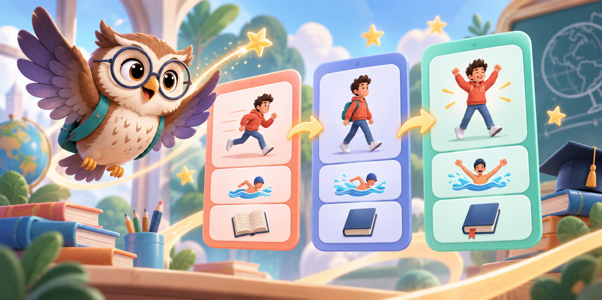

<!DOCTYPE html>
<html lang="ar" dir="rtl">
<head>
<meta charset="utf-8">
<meta name="viewport" content="width=device-width, initial-scale=1, viewport-fit=cover">
<title>إنجليزي ١٢ أ | Engage With English – منصة تفاعلية</title>
<link rel="preconnect" href="https://fonts.googleapis.com"><link rel="preconnect" href="https://fonts.gstatic.com" crossorigin>
<link href="https://fonts.googleapis.com/css2?family=Baloo+Bhaijaan+2:wght@500;600;700;800&family=IBM+Plex+Sans+Arabic:wght@400;500;600;700&display=swap" rel="stylesheet">
<style>
:root{
  --bg:#EEF4F0; --bg2:#E3EDE7; --surface:#FFFFFF; --ink:#24343A; --muted:#5F7278; --line:#D5E2DB;
  --t1:#E08A4E; --t1s:#FCEBDD; --t2:#6F7DD0; --t2s:#E7EAFA; --t3:#34A083; --t3s:#DAF1E8; --t4:#3F93C6; --t4s:#DCEDF8;
  --good:#3FAE7A; --goods:#DDF3E7; --bad:#D9736A; --bads:#FBE4E1; --star:#F2BE45;
  --shadow:0 2px 0 rgba(36,52,58,.08), 0 10px 24px -14px rgba(36,52,58,.25);
  --r-lg:22px; --r-md:16px; --r-sm:12px;
  --hf:'Baloo Bhaijaan 2', 'IBM Plex Sans Arabic', system-ui, sans-serif;
  --bf:'IBM Plex Sans Arabic', 'Baloo Bhaijaan 2', system-ui, sans-serif;
  color-scheme: light;
}
@media (prefers-color-scheme: dark){
  :root:not([data-theme="light"]){
    --bg:#162125; --bg2:#1C2A2F; --surface:#21313A; --ink:#E4EEEA; --muted:#9DB1B6; --line:#30444C;
    --t1:#F0A673; --t1s:#3A2C22; --t2:#98A3EA; --t2s:#282C45; --t3:#5CC6A6; --t3s:#1E3831; --t4:#6CB5E2; --t4s:#1D3342;
    --good:#5CC692; --goods:#1D3A2C; --bad:#EC8C83; --bads:#3F2624; --star:#F5CB63;
    --shadow:0 2px 0 rgba(0,0,0,.25), 0 12px 26px -14px rgba(0,0,0,.6);
    color-scheme: dark;
  }
}
:root[data-theme="dark"]{
  --bg:#162125; --bg2:#1C2A2F; --surface:#21313A; --ink:#E4EEEA; --muted:#9DB1B6; --line:#30444C;
  --t1:#F0A673; --t1s:#3A2C22; --t2:#98A3EA; --t2s:#282C45; --t3:#5CC6A6; --t3s:#1E3831; --t4:#6CB5E2; --t4s:#1D3342;
  --good:#5CC692; --goods:#1D3A2C; --bad:#EC8C83; --bads:#3F2624; --star:#F5CB63;
  --shadow:0 2px 0 rgba(0,0,0,.25), 0 12px 26px -14px rgba(0,0,0,.6);
  color-scheme: dark;
}
:root{ box-sizing:border-box; padding-top:env(safe-area-inset-top,0px); padding-bottom:env(safe-area-inset-bottom,0px); }
html{ scroll-padding-top:env(safe-area-inset-top,0px); }
*,*::before,*::after{ box-sizing:inherit; }
body{ margin:0; background:var(--bg); color:var(--ink); font-family:var(--bf); font-size:17px; line-height:1.7; -webkit-font-smoothing:antialiased; }
button{ font:inherit; color:inherit; cursor:pointer; border:0; background:none; }
img,svg{ max-width:100%; }
.en{ direction:ltr; text-align:left; unicode-bidi:isolate; }
.wrap{ max-width:760px; margin:0 auto; padding:0 16px 80px; }

/* top bar */
.bar{ position:sticky; top:env(safe-area-inset-top,0px); z-index:10; background:color-mix(in srgb, var(--bg) 92%, transparent); backdrop-filter:blur(8px); }
.bar-in{ max-width:760px; margin:0 auto; display:flex; align-items:center; gap:8px; padding:10px 16px; }
.brand{ font-family:var(--hf); font-weight:700; font-size:20px; flex:1; white-space:nowrap; min-width:0; display:flex; align-items:center; gap:8px; }
.brand small{ font-family:var(--bf); font-weight:500; font-size:13px; color:var(--muted); }
.icon-btn{ width:42px; height:42px; border-radius:50%; background:var(--surface); box-shadow:var(--shadow); display:grid; place-items:center; font-size:19px; }
.icon-btn:active{ transform:scale(.94); }
.xp{ font-family:var(--hf); font-weight:700; background:var(--surface); padding:6px 14px; border-radius:99px; box-shadow:var(--shadow); font-size:15px; white-space:nowrap; }
:focus-visible{ outline:3px solid var(--t4); outline-offset:2px; }

/* hero */
.hero{ display:flex; gap:14px; align-items:flex-end; margin:18px 0 8px; }
.hero .owl{ width:104px; flex:none; }
.bubble{ background:var(--surface); border-radius:var(--r-lg); border-bottom-right-radius:6px; padding:14px 18px; box-shadow:var(--shadow); flex:1; }
.bubble h1{ font-family:var(--hf); font-size:26px; line-height:1.3; margin:0 0 4px; }
.bubble p{ margin:0; color:var(--muted); font-size:15px; }
.stats{ display:grid; grid-template-columns:repeat(3,1fr); gap:10px; margin:16px 0 22px; }
.stat{ background:var(--surface); border-radius:var(--r-md); padding:10px; text-align:center; box-shadow:var(--shadow); }
.stat b{ display:block; font-family:var(--hf); font-size:24px; line-height:1.2; }
.stat span{ font-size:13px; color:var(--muted); }

/* path of themes */
.path{ position:relative; display:flex; flex-direction:column; gap:18px; padding:4px 0; }
.stop{ position:relative; display:flex; align-items:center; gap:14px; background:var(--surface); border-radius:var(--r-lg); padding:16px; box-shadow:var(--shadow); text-align:right; width:88%; transition:transform .25s cubic-bezier(.3,1.4,.5,1); }
.stop:nth-child(even){ margin-inline-start:auto; }
.stop:hover{ transform:translateY(-3px) rotate(-.4deg); }
.stop:active{ transform:scale(.98); }
.stop .badge{ width:64px; height:64px; border-radius:20px; display:grid; place-items:center; font-size:32px; flex:none; }
.stop h3{ margin:0; font-family:var(--hf); font-size:20px; line-height:1.3; }
.stop .sub{ font-size:14px; color:var(--muted); }
.prog{ height:8px; background:var(--bg2); border-radius:99px; overflow:hidden; margin-top:8px; }
.prog i{ display:block; height:100%; border-radius:99px; background:currentColor; transition:width .6s ease; }
.t1{ --c:var(--t1); --cs:var(--t1s); } .t2{ --c:var(--t2); --cs:var(--t2s); } .t3{ --c:var(--t3); --cs:var(--t3s); } .t4{ --c:var(--t4); --cs:var(--t4s); }
.badge{ background:var(--cs); color:var(--c); }
.stop .prog{ color:var(--c); }
.final-card{ margin-top:26px; display:flex; align-items:center; gap:14px; width:100%; padding:18px; border-radius:var(--r-lg); background:var(--ink); color:var(--bg); text-align:right; box-shadow:var(--shadow); }
.final-card .badge{ background:var(--star); color:#3a2c00; width:58px; height:58px; border-radius:18px; display:grid; place-items:center; font-size:28px; flex:none; }
.final-card h3{ margin:0; font-family:var(--hf); font-size:21px; line-height:1.3; }
.final-card p{ margin:0; font-size:14px; opacity:.8; }
.tip{ margin-top:20px; background:var(--bg2); border-radius:var(--r-md); padding:12px 16px; font-size:15px; }

/* grade 12 home dashboard */
.home-hero{ position:relative; overflow:hidden; min-height:250px; margin:16px 0 12px; padding:24px; border-radius:30px; background:linear-gradient(135deg,#202B45 0%,#303B67 55%,#68589A 100%); color:#fff; box-shadow:0 18px 45px -24px rgba(32,43,69,.8); }
.home-hero::before,.home-hero::after{ content:""; position:absolute; border-radius:50%; filter:blur(1px); opacity:.22; background:#fff; }
.home-hero::before{ width:190px; height:190px; left:-70px; top:-90px; }.home-hero::after{ width:140px; height:140px; right:28%; bottom:-95px; }
.hero-copy{ position:relative; z-index:2; max-width:64%; }
.hero-kicker{ display:inline-flex; align-items:center; gap:6px; padding:4px 11px; border:1px solid rgba(255,255,255,.22); background:rgba(255,255,255,.1); border-radius:99px; font-size:12px; font-weight:700; }
.hero-copy h1{ font:800 31px/1.25 var(--hf); margin:12px 0 6px; }
.hero-copy p{ margin:0; color:rgba(255,255,255,.75); font-size:14px; }
.hero-cta{ display:inline-flex; align-items:center; gap:7px; margin-top:16px; padding:9px 15px; border-radius:13px; background:#fff; color:#28324F; font-weight:800; }
.hero-art{ position:absolute; left:12px; bottom:0; width:235px; height:220px; z-index:1; }
.hero-art .float{ transform-origin:center; animation:floatCard 3.4s ease-in-out infinite; }
@keyframes floatCard{ 50%{ transform:translateY(-7px) rotate(1deg); } }
.home-stats{ margin-top:-34px; position:relative; z-index:3; padding-inline:16px; }
.home-stats .stat{ border:1px solid color-mix(in srgb,var(--line) 60%,transparent); }
.dash-title{ display:flex; justify-content:space-between; align-items:end; gap:12px; margin:24px 2px 10px; }
.dash-title h2{ margin:0; font:800 22px/1.2 var(--hf); }.dash-title span{ color:var(--muted); font-size:13px; }
.portal-grid{ display:grid; grid-template-columns:repeat(2,1fr); gap:11px; }
.portal{ position:relative; overflow:hidden; min-height:175px; padding:15px; border-radius:23px; background:var(--surface); border:1px solid var(--line); box-shadow:var(--shadow); text-align:right; transition:transform .2s; }
.portal:hover{ transform:translateY(-3px); }.portal:active{ transform:scale(.98); }
.portal .art{ height:76px; display:grid; place-items:center; margin-bottom:8px; }
.portal svg{ width:118px; height:76px; overflow:visible; }
.portal strong{ display:block; font:800 18px/1.2 var(--hf); }.portal small{ display:block; color:var(--muted); font-size:12px; margin-top:3px; }
.portal .arrow{ position:absolute; left:13px; bottom:12px; width:27px; height:27px; display:grid; place-items:center; border-radius:50%; background:var(--bg2); }
.portal.learn{ --pc:#6F7DD0; --ps:#E7EAFA; }.portal.play{ --pc:#E08A4E; --ps:#FCEBDD; }.portal.test{ --pc:#34A083; --ps:#DAF1E8; }.portal.exam{ --pc:#3F93C6; --ps:#DCEDF8; }
.portal .blob{ fill:var(--ps); }.portal .line{ stroke:var(--pc); }.portal .solid{ fill:var(--pc); }
.section-label{ display:flex; align-items:center; gap:8px; margin:25px 2px 12px; }.section-label h2{ margin:0; font:800 21px/1.2 var(--hf); }.section-label::after{ content:""; height:1px; background:var(--line); flex:1; }
@media (max-width:520px){ .home-hero{ min-height:265px; padding:20px; }.hero-copy{ max-width:72%; }.hero-copy h1{ font-size:27px; }.hero-art{ width:190px; height:180px; left:-10px; }.portal{ min-height:165px; padding:13px; }.portal strong{ font-size:16px; } }

/* theme page */
.thead{ border-radius:var(--r-lg); padding:20px; margin:14px 0 16px; background:var(--cs); display:flex; gap:14px; align-items:center; }
.thead .emo{ font-size:44px; }
.thead h2{ margin:0; font-family:var(--hf); font-size:24px; line-height:1.25; color:var(--ink); }
.thead .en{ color:var(--c); font-weight:600; font-family:var(--hf); text-align:right; direction:ltr; }
.lessons{ display:flex; flex-direction:column; gap:10px; }
.lrow{ display:flex; align-items:center; gap:12px; background:var(--surface); border-radius:var(--r-md); padding:12px 14px; box-shadow:var(--shadow); text-align:right; width:100%; }
.lrow:active{ transform:scale(.99); }
.lnum{ width:44px; height:44px; border-radius:14px; display:grid; place-items:center; font-family:var(--hf); font-weight:700; font-size:20px; background:var(--cs); color:var(--c); flex:none; }
.lrow .tt{ flex:1; min-width:0; }
.lrow .tt b{ display:block; font-family:var(--hf); font-size:17px; line-height:1.35; direction:ltr; text-align:right; }
.lrow .tt span{ font-size:14px; color:var(--muted); }
.chip{ display:inline-block; font-size:12px; padding:1px 10px; border-radius:99px; background:var(--bg2); color:var(--muted); margin-inline-start:6px; }
.stars{ font-size:15px; letter-spacing:1px; white-space:nowrap; }
.stars .off{ opacity:.22; filter:grayscale(1); }
.unit-card{ background:var(--surface); border-radius:var(--r-lg); box-shadow:var(--shadow); padding:13px; }
.unit-main{ width:100%; display:flex; align-items:center; gap:12px; text-align:right; }
.unit-main:active{ transform:scale(.99); }
.unit-actions{ display:grid; grid-template-columns:repeat(3,1fr); gap:7px; margin-top:11px; padding-top:10px; border-top:1px solid var(--line); }
.unit-actions button{ border-radius:11px; padding:7px 5px; background:var(--bg2); color:var(--muted); font-size:12px; font-weight:700; }
.unit-actions button:hover{ background:var(--cs); color:var(--ink); }

/* lesson */
.ltitle{ margin:14px 0 4px; }
.ltitle h2{ margin:0; font-family:var(--hf); font-size:26px; line-height:1.25; direction:ltr; text-align:right; }
.ltitle p{ margin:0; color:var(--muted); }
.tabs{ display:grid; grid-template-columns:repeat(3,1fr); gap:6px; background:var(--surface); padding:6px; border-radius:18px; box-shadow:var(--shadow); margin:14px 0 16px; position:sticky; top:calc(env(safe-area-inset-top,0px) + 62px); z-index:5; }
.tab{ padding:10px 4px; border-radius:13px; font-family:var(--hf); font-weight:600; font-size:16px; color:var(--muted); }
.tab[aria-selected="true"]{ background:var(--cs); color:var(--ink); }
.seg{ display:inline-flex; background:var(--bg2); border-radius:99px; padding:4px; gap:2px; margin-bottom:12px; }
.seg button{ padding:4px 14px; border-radius:99px; font-size:14px; color:var(--muted); }
.seg button[aria-pressed="true"]{ background:var(--surface); color:var(--ink); box-shadow:var(--shadow); }
.card{ background:var(--surface); border-radius:var(--r-lg); padding:18px; box-shadow:var(--shadow); margin-bottom:14px; }
.card h3{ margin:0 0 8px; font-family:var(--hf); font-size:19px; line-height:1.35; color:var(--c); }
.card p{ margin:0 0 10px; }
.card .en-p{ background:var(--bg2); border-radius:var(--r-sm); padding:10px 12px; display:flex; gap:8px; align-items:flex-start; }
.card .en-p span{ flex:1; }
.ex{ list-style:none; padding:0; margin:10px 0 0; display:flex; flex-direction:column; gap:6px; }
.ex li{ display:flex; gap:8px; align-items:flex-start; padding:8px 10px; border-inline-start:4px solid var(--c); background:var(--cs); border-radius:10px; }
.ex li span{ flex:1; }
.say{ flex:none; width:32px; height:32px; border-radius:50%; background:var(--surface); display:grid; place-items:center; font-size:15px; box-shadow:0 1px 0 var(--line); }
.say:active{ transform:scale(.9); }
.say.on{ background:var(--c); color:#fff; }
.vgrid{ display:grid; grid-template-columns:repeat(auto-fill,minmax(160px,1fr)); gap:8px; }
.vcard{ display:flex; align-items:center; gap:8px; background:var(--bg2); border-radius:var(--r-sm); padding:8px 10px; text-align:right; }
.vcard b{ display:block; font-size:15px; direction:ltr; text-align:right; }
.vcard small{ color:var(--muted); font-size:13px; }
.pageref{ font-size:13px; color:var(--muted); text-align:center; margin-top:4px; }

/* game list */
.glist{ display:grid; grid-template-columns:repeat(auto-fill,minmax(210px,1fr)); gap:10px; }
.gitem{ background:var(--surface); border-radius:var(--r-lg); padding:16px; text-align:right; box-shadow:var(--shadow); display:flex; flex-direction:column; gap:4px; min-height:118px; }
.gitem .gi{ font-size:30px; }
.gitem b{ font-family:var(--hf); font-size:17px; line-height:1.3; }
.gitem small{ color:var(--muted); }
.gitem:hover{ transform:translateY(-2px); }

/* game stage */
.stage-head{ display:flex; align-items:center; gap:10px; margin:12px 0; }
.stage-head h2{ unicode-bidi:plaintext; flex:1; margin:0; font-family:var(--hf); font-size:21px; line-height:1.3; }
.meter{ height:12px; background:var(--surface); border-radius:99px; overflow:hidden; box-shadow:inset 0 0 0 1px var(--line); margin-bottom:16px; }
.meter i{ display:block; height:100%; background:var(--c); border-radius:99px; transition:width .4s cubic-bezier(.3,1.3,.5,1); }
.mcol{ display:grid; grid-template-columns:1fr 1fr; gap:10px; direction:ltr; }
.mcol > div{ display:flex; flex-direction:column; gap:8px; }
.tile{ background:var(--surface); border-radius:var(--r-sm); padding:10px 12px; box-shadow:var(--shadow); text-align:left; font-size:15px; line-height:1.4; min-height:52px; transition:transform .15s, background .2s; border:2px solid transparent; }
.tile.sel{ border-color:var(--c); background:var(--cs); transform:scale(1.02); }
.tile.ok{ background:var(--goods); color:var(--good); border-color:var(--good); pointer-events:none; opacity:.75; }
.tile.no{ background:var(--bads); border-color:var(--bad); animation:shake .35s; }
.tile.ar{ direction:rtl; text-align:right; }
@keyframes shake{ 20%,60%{ transform:translateX(-6px);} 40%,80%{ transform:translateX(6px);} }
.sort-card{ background:var(--surface); border-radius:var(--r-lg); padding:26px 18px; text-align:center; box-shadow:var(--shadow); font-size:21px; font-weight:600; direction:ltr; display:flex; align-items:center; justify-content:center; gap:10px; min-height:110px; margin-bottom:16px; }
.sort-card.pop{ animation:pop .35s cubic-bezier(.3,1.6,.5,1); }
@keyframes pop{ from{ transform:scale(.85); opacity:.4; } }
.buckets{ display:grid; grid-template-columns:repeat(auto-fit,minmax(140px,1fr)); gap:10px; }
.bucket{ background:var(--cs); border:2px dashed var(--c); border-radius:var(--r-md); padding:16px 10px; font-family:var(--hf); font-weight:700; font-size:17px; min-height:76px; transition:transform .15s, background .2s; }
.bucket:active{ transform:scale(.96); }
.bucket.ok{ background:var(--goods); border-color:var(--good); border-style:solid; }
.bucket.no{ background:var(--bads); border-color:var(--bad); animation:shake .35s; }
.order-ans, .order-pool{ display:flex; flex-direction:column; gap:8px; min-height:60px; }
.order-ans{ background:var(--bg2); border-radius:var(--r-md); padding:10px; margin-bottom:14px; counter-reset:o; }
.order-ans:empty::before{ content:"اضغط على العناصر بالترتيب الصحيح 👇"; color:var(--muted); font-size:15px; padding:8px; }
.otile{ display:flex; gap:10px; align-items:center; direction:ltr; text-align:left; }
.order-ans .otile::before{ counter-increment:o; content:counter(o); width:28px; height:28px; border-radius:50%; background:var(--c); color:#fff; display:grid; place-items:center; font-weight:700; font-size:14px; flex:none; }
.qbox{ background:var(--surface); border-radius:var(--r-lg); padding:18px; box-shadow:var(--shadow); margin-bottom:14px; }
.qbox .q{ font-size:19px; font-weight:600; direction:ltr; text-align:left; display:flex; gap:10px; align-items:flex-start; }
.qbox .q span{ flex:1; }
.opts{ display:flex; flex-direction:column; gap:8px; }
.opt{ background:var(--surface); border-radius:var(--r-md); padding:12px 16px; box-shadow:var(--shadow); text-align:left; direction:ltr; border:2px solid transparent; font-size:16px; display:flex; gap:10px; align-items:center; }
.opt .k{ width:28px; height:28px; border-radius:9px; background:var(--bg2); display:grid; place-items:center; font-weight:700; font-size:14px; flex:none; }
.opt.ar{ direction:rtl; text-align:right; }
.opt.pick{ border-color:var(--c); background:var(--cs); }
.opt.ok{ border-color:var(--good); background:var(--goods); }
.opt.ok .k{ background:var(--good); color:#fff; }
.opt.no{ border-color:var(--bad); background:var(--bads); }
.opt.no .k{ background:var(--bad); color:#fff; }
.opts.done .opt{ pointer-events:none; }
.why{ margin-top:12px; padding:12px 14px; border-radius:var(--r-md); background:var(--bg2); font-size:15px; display:flex; gap:10px; align-items:flex-start; }
.why .owl{ width:44px; flex:none; }
.big-btn{ display:block; width:100%; margin-top:14px; padding:14px; border-radius:var(--r-md); background:var(--c, var(--t3)); color:#fff; font-family:var(--hf); font-weight:700; font-size:19px; box-shadow:0 4px 0 color-mix(in srgb, var(--c, var(--t3)) 70%, #000); }
.big-btn:active{ transform:translateY(3px); box-shadow:0 1px 0 color-mix(in srgb, var(--c, var(--t3)) 70%, #000); }
.big-btn.ghost{ background:var(--surface); color:var(--ink); box-shadow:var(--shadow); }
.big-btn[disabled]{ opacity:.45; pointer-events:none; }
.listen-btn{ width:120px; height:120px; border-radius:50%; margin:6px auto 18px; display:grid; place-items:center; font-size:48px; background:var(--cs); border:4px solid var(--c); }
.listen-btn:active{ transform:scale(.94); }

/* result */
.result{ text-align:center; padding:10px 0; }
.result .owl{ width:140px; margin:0 auto; display:block; }
.result h2{ font-family:var(--hf); font-size:28px; margin:6px 0; }
.result .bigstars{ font-size:44px; letter-spacing:6px; }
.result .bigstars span{ display:inline-block; animation:starin .5s cubic-bezier(.3,1.7,.5,1) both; }
.result .bigstars span:nth-child(2){ animation-delay:.15s; } .result .bigstars span:nth-child(3){ animation-delay:.3s; }
@keyframes starin{ from{ transform:scale(0) rotate(-40deg); opacity:0; } }
.review{ text-align:right; margin-top:18px; }
.review .card{ font-size:15px; }
.review .en{ font-weight:600; }
.weak{ display:flex; flex-wrap:wrap; gap:8px; justify-content:center; margin-top:10px; }
.weak button{ background:var(--surface); box-shadow:var(--shadow); padding:6px 14px; border-radius:99px; font-size:14px; }
.timer{ font-family:var(--hf); font-weight:700; background:var(--surface); padding:4px 12px; border-radius:99px; box-shadow:var(--shadow); }
.intro-list{ margin:0; padding-inline-start:20px; }
.toast{ position:fixed; bottom:calc(env(safe-area-inset-bottom,0px) + 18px); left:50%; transform:translateX(-50%) translateY(20px); opacity:0; background:var(--ink); color:var(--bg); padding:10px 18px; border-radius:99px; font-weight:600; transition:.3s; z-index:30; pointer-events:none; }
.toast.show{ opacity:1; transform:translateX(-50%) translateY(0); }
#confetti{ position:fixed; inset:0; pointer-events:none; z-index:40; width:100%; height:100%; }
.owl-bob{ animation:bob 3s ease-in-out infinite; transform-origin:bottom center; }
@keyframes bob{ 50%{ transform:translateY(-4px) rotate(-2deg); } }

@media (max-width:520px){
  .hide-sm{ display:none; }
  .brand{ font-size:18px; }
  body{ font-size:16px; }
  .stop{ width:100%; }
  .hero .owl{ width:82px; }
  .bubble h1{ font-size:22px; }
  .mcol{ gap:8px; }
  .tile{ font-size:14px; padding:8px 10px; }
  .tab{ font-size:15px; }
}
@media (prefers-reduced-motion: reduce){
  *,*::before,*::after{ animation:none !important; transition:none !important; }
}

/* picture vocabulary */
.fgrid{ display:grid; grid-template-columns:repeat(auto-fill,minmax(140px,1fr)); gap:10px; }
.flip{ perspective:800px; height:150px; cursor:pointer; }
.fin{ position:relative; width:100%; height:100%; transition:transform .5s cubic-bezier(.3,1.3,.5,1); transform-style:preserve-3d; }
.flip.turn .fin{ transform:rotateY(180deg); }
.ff,.fb{ position:absolute; inset:0; backface-visibility:hidden; -webkit-backface-visibility:hidden; border-radius:var(--r-md); display:flex; flex-direction:column; align-items:center; justify-content:center; gap:2px; padding:8px; text-align:center; }
.ff{ background:var(--cs); border:2px solid color-mix(in srgb, var(--c) 35%, transparent); }
.fb{ background:var(--surface); border:2px solid var(--c); transform:rotateY(180deg); }
.ff b{ font-size:16px; line-height:1.25; text-align:center; }
.fb b{ font-size:17px; line-height:1.35; color:var(--c); }
.fb small{ color:var(--muted); }
.femo{ font-size:40px; line-height:1.1; white-space:nowrap; }
.femo.sm{ font-size:28px; }
.ff .say{ position:absolute; top:6px; left:6px; width:28px; height:28px; font-size:13px; }
.flip:hover .ff{ transform:translateY(-2px); }
.temo{ margin-inline-end:6px; }
.picbox{ font-size:84px; text-align:center; background:var(--surface); border-radius:var(--r-lg); box-shadow:var(--shadow); padding:18px 10px; margin-bottom:14px; line-height:1.2; }
.picbox.pop{ animation:pop .4s cubic-bezier(.3,1.6,.5,1); }
.mem{ display:grid; grid-template-columns:repeat(4,1fr); gap:8px; }
.mcard{ position:relative; aspect-ratio:3/4; border-radius:var(--r-md); background:var(--c); color:#fff; box-shadow:var(--shadow); transition:transform .35s; transform-style:preserve-3d; }
.mcard .mback,.mcard .mface{ position:absolute; inset:0; display:flex; flex-direction:column; align-items:center; justify-content:center; border-radius:var(--r-md); backface-visibility:hidden; -webkit-backface-visibility:hidden; padding:4px; }
.mcard .mback{ font-family:var(--hf); font-size:34px; font-weight:800; background:repeating-linear-gradient(45deg, var(--c) 0 10px, color-mix(in srgb, var(--c) 85%, #fff) 10px 20px); }
.mcard .mface{ background:var(--surface); color:var(--ink); transform:rotateY(180deg); border:2px solid var(--c); text-align:center; }
.mcard.up{ transform:rotateY(180deg); }
.mcard.got .mface{ background:var(--goods); border-color:var(--good); }
.memo-emo{ font-size:32px; line-height:1.1; }
.mface small{ font-size:12px; line-height:1.3; }
.mface b{ font-size:14px; line-height:1.25; text-align:center; direction:ltr; }
.wod{ display:flex; align-items:center; gap:12px; background:var(--surface); border-radius:var(--r-lg); padding:12px 16px; box-shadow:var(--shadow); margin-bottom:20px; border:2px dashed var(--star); }
.wod-emo{ font-size:44px; }
.wod small{ display:block; color:var(--muted); font-size:13px; }
.wod b{ display:block; font-family:var(--hf); font-size:22px; line-height:1.2; text-align:right; }
.verb-hero{ width:100%; aspect-ratio:16/7; object-fit:cover; border-radius:var(--r-md); margin-bottom:14px; box-shadow:var(--shadow); }
.verb-intro{ display:flex; align-items:center; gap:12px; margin-bottom:12px; }
.verb-intro .badge{ flex:none; background:var(--t1s); color:var(--t1); border-radius:99px; padding:5px 11px; font-weight:700; font-size:13px; }
.verb-grid{ display:grid; grid-template-columns:repeat(auto-fill,minmax(210px,1fr)); gap:9px; }
.verb-card{ background:var(--bg2); border:1px solid var(--line); border-radius:var(--r-md); padding:11px; display:grid; grid-template-columns:44px 1fr auto; align-items:center; gap:9px; text-align:right; }
.verb-card .vpic{ font-size:31px; text-align:center; }
.verb-card .forms{ direction:ltr; text-align:left; font-weight:700; line-height:1.3; }
.verb-card .forms small{ display:block; direction:rtl; text-align:left; color:var(--muted); font-weight:500; }
.verb-card .say{ width:30px; height:30px; }
.verb-play{ text-align:center; }
.verb-play .vscene{ font-size:86px; line-height:1.1; margin:4px 0 6px; }
.verb-play .meaning{ color:var(--muted); margin:0 0 12px; }
.verb-play .base{ direction:ltr; font-family:var(--hf); font-size:30px; margin:0; }
.form-labels{ direction:ltr; display:grid; grid-template-columns:repeat(3,1fr); gap:7px; margin:12px 0 16px; }
.form-labels span{ background:var(--surface); border:1px solid var(--line); border-radius:12px; padding:7px 4px; font-size:12px; color:var(--muted); }
.form-labels b{ display:block; color:var(--ink); font-size:16px; }
.syn-note{ background:linear-gradient(135deg,var(--t1s),var(--surface)); border:1px solid color-mix(in srgb,var(--t1) 30%,transparent); border-radius:var(--r-md); padding:12px 14px; margin-bottom:12px; }
.syn-grid{ display:grid; grid-template-columns:repeat(auto-fill,minmax(210px,1fr)); gap:9px; }
.syn-card{ position:relative; overflow:hidden; background:var(--bg2); border:1px solid var(--line); border-radius:var(--r-md); padding:12px; display:grid; grid-template-columns:42px 1fr auto; gap:9px; align-items:center; }
.syn-card .spic{ font-size:30px; text-align:center; }
.syn-card .pair{ direction:ltr; text-align:left; line-height:1.25; }
.syn-card .pair b{ display:block; font-size:16px; }
.syn-card .pair small{ direction:rtl; display:block; color:var(--muted); margin-top:3px; }
.syn-card .pos{ position:absolute; top:5px; right:7px; font-size:10px; color:var(--muted); text-transform:uppercase; }
.syn-play{ text-align:center; }
.syn-play .spic{ font-size:86px; line-height:1.1; }
.syn-play .prompt-word{ direction:ltr; font:800 32px/1.2 var(--hf); margin:4px 0; }
.syn-streak{ display:inline-flex; gap:5px; background:var(--surface); border:1px solid var(--line); padding:5px 12px; border-radius:99px; color:var(--muted); font-size:13px; }
.md-rule{ display:grid; grid-template-columns:1fr 1fr; gap:9px; margin:12px 0; }
.md-rule > div{ border-radius:var(--r-md); padding:13px; background:var(--bg2); border-top:4px solid var(--c); }
.md-rule h4{ direction:ltr; font:800 23px/1 var(--hf); margin:0 0 7px; }
.md-grid{ display:grid; grid-template-columns:repeat(auto-fill,minmax(205px,1fr)); gap:8px; }
.md-card{ background:var(--surface); border:1px solid var(--line); border-radius:14px; padding:10px; display:grid; grid-template-columns:38px 1fr auto; align-items:center; gap:7px; }
.md-card .mpic{ font-size:27px; text-align:center; }
.md-card b{ direction:ltr; display:block; text-align:left; line-height:1.2; }
.md-card small{ color:var(--muted); display:block; }
.md-card.do b{ color:var(--t4); }.md-card.make b{ color:var(--t1); }
.md-scene{ text-align:center; }
.md-scene .mpic{ font-size:82px; line-height:1.1; }
.md-scene .phrase{ direction:ltr; font:800 27px/1.25 var(--hf); margin:4px 0; }
.market-cols{ display:grid; grid-template-columns:1fr 1fr; gap:10px; }
.market-col{ border-radius:var(--r-md); padding:13px; background:var(--bg2); border:1px solid var(--line); }
.market-col h4{ margin:0 0 9px; font:800 20px/1.2 var(--hf); }
.market-chip{ direction:ltr; text-align:left; background:var(--surface); border-radius:11px; padding:8px 10px; margin-top:6px; display:flex; align-items:center; gap:7px; font-size:14px; }
.market-chip span{ font-size:20px; }
.duel-score{ display:flex; justify-content:center; gap:8px; margin-bottom:10px; }
.duel-score span{ background:var(--surface); border:1px solid var(--line); border-radius:99px; padding:5px 11px; font-size:13px; }
.market-scene{ text-align:center; }
.market-scene .memoji{ font-size:80px; line-height:1.1; }
.market-scene .mphrase{ direction:ltr; font:800 25px/1.25 var(--hf); margin:7px auto 15px; max-width:520px; }
.market-picks{ display:grid; grid-template-columns:1fr 1fr; gap:10px; }
.market-pick{ min-height:110px; border-radius:var(--r-lg); background:var(--surface); border:3px solid var(--line); box-shadow:var(--shadow); padding:13px; font:800 20px/1.2 var(--hf); }
.market-pick span{ display:block; font-size:38px; margin-bottom:5px; }
.market-pick.mall{ border-color:var(--t4); }.market-pick.souq{ border-color:var(--t1); }
.market-pick.ok{ background:var(--goods); border-color:var(--good); }.market-pick.no{ background:var(--bads); border-color:var(--bad); animation:shake .35s; }
@media (max-width:520px){ .md-rule{ grid-template-columns:1fr; } }
@media (max-width:520px){ .market-cols{ grid-template-columns:1fr; } .market-pick{ font-size:17px; min-height:96px; } }
@media (max-width:520px){ .mem{ grid-template-columns:repeat(4,1fr); gap:6px; } .mcard{ aspect-ratio:4/5; } .memo-emo{ font-size:24px; } .mface b{ font-size:12px; } .mface small{ font-size:10.5px; } .fgrid{ grid-template-columns:repeat(2,1fr); } }
</style></head><body><div id="app"></div><div class="toast" id="toast" role="status"></div><canvas id="confetti"></canvas><script>
const THEMES = [
  { id: 1, en: "Retail Therapy", ar: "التسوق والتجارة", icon: "🛍️", color: "t1" },
  { id: 2, en: "Starting University", ar: "بداية الحياة الجامعية", icon: "🎓", color: "t2" },
  { id: 3, en: "Tourism and Hospitality", ar: "السياحة والضيافة", icon: "🏝️", color: "t3" },
  { id: 4, en: "Travel and Transport", ar: "السفر والنقل", icon: "✈️", color: "t4" }
];

const LESSONS = [
/* ================= THEME 1 ================= */
{
  id: "1-1", theme: 1, unit: 1, en: "A Fair Exchange", ar: "تبادل عادل", skill: "Reading", skillAr: "قراءة", page: 2,
  explain: [
    { h: "Skimming | القراءة السريعة",
      ar: "الـ Skimming يعني تمر على النص بسرعة عشان تعرف الفكرة العامة (gist) بدون ما تفهم كل كلمة. استخدم العنوان والعناوين الفرعية والصور والجداول، واقرأ أول جملة في كل فقرة.",
      en: "Skimming means reading a text very quickly to get the gist (main idea). Use headings, sub-headings, pictures and charts. Read the first sentence of each paragraph.",
      ex: ["Skim first → then read in detail.", "Don't stop at every new word."] },
    { h: "Topic sentence | الجملة الرئيسية",
      ar: "كل فقرة لها جملة تعطي الفكرة الرئيسية، وغالباً تكون أول جملة. لما تطابق عنوان مع فقرة، دور على الجملة الرئيسية.",
      en: "A topic sentence gives the main idea of a paragraph. It is usually the first sentence.",
      ex: ["Trade has changed the course of history. → The History of Trading"] },
    { h: "Text summary | ملخص النص",
      ar: "النص يتكلم عن التجارة عبر التاريخ: العُمانيون تجار عظماء، القوافل على طريق الحرير، السفن الشراعية (dhows) للهند والصين وشرق أفريقيا. ظفار كانت مركز تجارة اللبان من 5000 قبل الميلاد. ومن الستينات صار النفط هو مصدر الدخل الرئيسي وتنقله ناقلات عملاقة.",
      en: "The text is about trade in ancient and modern times: Omani traders, the Silk Road, Arab dhows, the frankincense trade in Dhofar, and oil since the 1960s carried by supertankers.",
      ex: ["Best title: Trading in Ancient and Modern Times"] },
    { h: "Trading phrases | عبارات المقايضة",
      ar: "عبارات من نشاط Time to Talk تستخدمها لما تبادل شي مع زميلك.",
      en: "Useful phrases for trading with a partner.",
      ex: ["What will you give me for my watch?", "Are you willing to trade your pen?", "I'll make you a good offer for your book.", "OK, that's a fair deal.", "No way!"] }
  ],
  vocab: [["merchants","تجار"],["dramatically","بشكل كبير ومفاجئ"],["location","موقع"],["routes","طرق"],["exported","صُدِّر"],["rituals","طقوس دينية"],["economic","اقتصادي"],["gigantic","ضخم جداً"],["frankincense","لبان"],["dhow","سفينة شراعية"]],
  synonyms: [
    ["consumer","customer","n.","مستهلك / زبون","🛒"],["research","study","n.","بحث","🔬"],
    ["connect","join","v.","يوصل / يربط","🔗"],["discover","find out","v.","يكتشف","🔎"],
    ["ancient","old","adj.","قديم","🏺"],["various","different","adj.","متنوع / مختلف","🎨"],
    ["reduce","decrease","v.","يقلّل","📉"],["gradually","slowly","adv.","تدريجيًا","🐢"],
    ["quickly","fast","adv.","بسرعة","⚡"],["disease","illness","n.","مرض","🤒"],
    ["remain","stay","v.","يبقى","📍"],["enormous","huge","adj.","ضخم","🐘"],
    ["create","make","v.","يصنع / يخلق","🛠️"],["increase","rise","v.","يزداد","📈"]
  ],
  games: [
    { type: "match", title: "طابق الكلمة بمعناها", pairs: [["merchants","people who buy and sell goods"],["dramatically","suddenly and greatly"],["location","position"],["routes","ways from one place to another"],["exported","sold to another country"],["rituals","religious ceremonies"],["economic","relating to trade and money"],["gigantic","enormous"]] },
    { type: "sort", title: "سفينة شراعية ولا ناقلة نفط؟", buckets: ["⛵ Dhow (A)","🚢 Tanker (B)"], items: [["powered by wind",0],["carries silk and spices",0],["made of wood",0],["triangular sail",0],["carries oil",1],["made of steel",1],["powerful engines",1],["electronic controls",1]] },
    { type: "match", title: "طابق العنوان بالفقرة", pairs: [["Paragraph 1","The History of Trading"],["Paragraph 2","The Arabs as Traders"],["Paragraph 3","The Frankincense Trade"],["Paragraph 4","The Emergence of Oil"]] },
    { type: "synonyms", title: "تحدّي صائد المرادفات" }
  ],
  quiz: [
    { q: "We skim a text to find ______.", o: ["every new word","the gist (main idea)","the grammar","the author's name"], a: 1, why: "الـ Skimming هدفه الفكرة العامة فقط." },
    { q: "Which is the best title for the text 'A Fair Exchange'?", o: ["Shopping for Perfumes","The Rise of the Oil Business in Oman","Trading in Ancient and Modern Times","The History of the Frankincense Trade"], a: 2, why: "النص يغطي التجارة قديماً وحديثاً، مو بس اللبان أو النفط." },
    { q: "In 5000 BCE, the centre of the frankincense trade was ______.", o: ["Muscat","Dhofar","Sur","Nizwa"], a: 1, why: "النص يذكر أن ظفار كانت مركز تجارة اللبان." },
    { q: "'Sold to another country' means ______.", o: ["imported","exported","traded","bought"], a: 1, why: "export = يصدّر، import = يستورد." },
    { q: "Since the 1960s, most of Oman's income has come from ______.", o: ["frankincense","fishing","oil","silk"], a: 2, why: "من الستينات صار النفط مصدر الدخل الأساسي." },
    { q: "A topic sentence is ______.", o: ["the last sentence of a text","the sentence with the main idea of a paragraph","a question","a title"], a: 1, why: "الجملة الرئيسية تحمل فكرة الفقرة، وغالباً في بدايتها." },
    { q: "Which word is a synonym of 'enormous'?", o: ["tiny","slow","huge","old"], a: 2, why: "enormous وhuge كلاهما يعني ضخم." },
    { q: "To 'discover' something means to ______ it.", o: ["find out","reduce","remain","connect"], a: 0, why: "discover = find out = يكتشف." },
    { q: "Which pair consists of adverbs?", o: ["consumer / customer","quickly / fast","create / make","ancient / old"], a: 1, why: "quickly وfast هنا يصفان طريقة حدوث الفعل، فهما ظرفان." },
    { q: "The closest meaning to 'remain' is ______.", o: ["leave","rise","stay","make"], a: 2, why: "remain = stay = يبقى." },
    { q: "If prices increase, they ______.", o: ["rise","decrease","stay","join"], a: 0, why: "increase = rise = يزداد." }
  ]
},
{
  id: "1-2", theme: 1, unit: 2, en: "What's in a Name?", ar: "ماذا في الاسم؟", skill: "Grammar", skillAr: "قواعد", page: 4,
  explain: [
    { h: "Past Simple | الماضي البسيط",
      ar: "نستخدمه لـ: (1) حدث انتهى في الماضي، (2) أحداث متتالية في قصة، (3) حالة في الماضي.",
      en: "Use the past simple for: completed actions in the past, actions that follow each other in a sequence, and past states.",
      ex: ["Alexander Graham Bell invented the first telephone. (completed action)", "The Wright brothers first built a plane and then flew it. (sequence)", "The Omanis were great traders in the past. (past state)"] },
    { h: "Past Simple Passive | المبني للمجهول",
      ar: "التركيب: was/were + التصريف الثالث (V3). نستخدمه لما يكون الحدث أهم من الفاعل، أو لما ما نعرف مين الفاعل. لو نبغى نذكر الفاعل نستخدم by.",
      en: "Form: was/were + past participle. Use it when the action is more important than the person, or when we don't know who did it.",
      ex: ["Microsoft was founded in 1975 by Bill Gates.", "Mobile phones were not created until the late 20th century.", "Active: Adolf Dassler founded Adidas. → Passive: Adidas was founded by Adolf Dassler."] },
    { h: "Brand stories | قصص الأسماء",
      ar: "Adidas جاءت من Adi (لقب Adolf) + Das (أول 3 حروف من Dassler). Coca-Cola من أوراق الكوكا وجوز الكولا. سيارة Nova ما انباعت في أمريكا اللاتينية لأن no va بالإسبانية تعني «ما تمشي». شعار الطيران العُماني (2008) يمثل دخان اللبان.",
      en: "Adidas = Adi + Das(sler). 'No va' in Spanish means 'it doesn't go', so the Chevrolet Nova did not sell well. Oman Air's logo (2008) is a swirl of frankincense smoke.",
      ex: [] }
  ],
  vocab: [["brand","علامة تجارية"],["logo","شعار"],["trademark","علامة مسجلة"],["founder","مؤسس"],["consumer","مستهلك"],["ownership","ملكية"],["derived from","مشتق من"],["heritage","تراث"]],
  irregulars: [
    ["kneel","knelt","knelt","يركع","🧎"],["tear","tore","torn","يمزّق","📄💥"],["freeze","froze","frozen","يتجمّد","🧊"],
    ["forgive","forgave","forgiven","يسامح","🤝💛"],["steal","stole","stolen","يسرق","🥷"],["dig","dug","dug","يحفر","⛏️"],
    ["rise","rose","risen","يرتفع","🌅"],["stick","stuck","stuck","يلتصق","🩹"],["hurt","hurt","hurt","يؤذي","🤕"],
    ["hold","held","held","يمسك","✋"],["beat","beat","beaten","يهزم / يضرب","🥁"],["begin","began","begun","يبدأ","🚦"],
    ["know","knew","known","يعرف","🧠"],["speak","spoke","spoken","يتحدث","🗣️"],["win","won","won","يفوز","🏆"],
    ["leave","left","left","يغادر","🚪"],["sell","sold","sold","يبيع","🏷️"],["choose","chose","chosen","يختار","☝️"],
    ["make","made","made","يصنع","🛠️"],["get","got","got","يحصل على","🎁"],["take","took","taken","يأخذ","🤲"],
    ["give","gave","given","يعطي","🎁➡️"],["shine","shone","shone","يلمع","✨"]
  ],
  games: [
    { type: "sort", title: "ماضي بسيط ولا مبني للمجهول؟", buckets: ["Past Simple","Past Simple Passive"], items: [["burned marks",0],["got their names",0],["chose the name",0],["changed the 'K'",0],["was taken from",1],["was shortened",1],["were introduced",1],["was derived from",1],["was created in 2008",1],["was chosen",1]] },
    { type: "pick", title: "حوّل للمبني للمجهول", items: [
      { s: "People in ancient times used branding. → Branding ___ in ancient times.", o: ["was used","used","were used","is used"], a: 0 },
      { s: "Chevrolet made a mistake. → A mistake ___ by Chevrolet.", o: ["made","was made","were made","was make"], a: 1 },
      { s: "Adolf Dassler founded Adidas. → Adidas ___ by Adolf Dassler.", o: ["founded","was found","was founded","were founded"], a: 2 },
      { s: "Pemberton changed 'Kola' to 'Cola'. → 'Kola' ___ to 'Cola'.", o: ["was changed","changed","were changed","is changed"], a: 0 },
      { s: "Oman Air chose a new logo. → A new logo ___ by Oman Air.", o: ["chose","was choose","was chosen","were chosen"], a: 2 }
    ] },
    { type: "match", title: "طابق الجملة باستخدامها", pairs: [["Microsoft was founded in 1975 by Bill Gates.","emphasise the action"],["The Omanis were great traders.","past state"],["They built a plane and then flew it.","sequence of actions"],["Bell invented the first telephone.","completed action"],["Mobile phones were not created until…","we don't know who did it"]] },
    { type: "verbs", title: "مغامرة الأفعال الشاذة", note: "V1 → V2 → V3" }
  ],
  quiz: [
    { q: "The first telephone ______ by Alexander Graham Bell.", o: ["invented","was invented","were invented","is invent"], a: 1, why: "مبني للمجهول مفرد: was + V3." },
    { q: "The Wright brothers first built a plane and then ______ it.", o: ["flew","was flown","fly","were flown"], a: 0, why: "أحداث متتالية في الماضي = ماضي بسيط." },
    { q: "Why didn't the Chevrolet Nova sell well in Latin America?", o: ["It was too expensive","'No va' means 'it doesn't go' in Spanish","It had no logo","It was too slow"], a: 1, why: "الاسم معناه بالإسبانية «ما تمشي»." },
    { q: "Oman Air's logo represents ______.", o: ["a dhow","a falcon","a swirl of frankincense smoke","a palm tree"], a: 2, why: "الشعار مستوحى من دخان اللبان، رمز التراث العُماني." },
    { q: "We use the passive when ______.", o: ["the person is more important","the action is more important than the person","we talk about the future","we give orders"], a: 1, why: "المبني للمجهول يركز على الحدث نفسه." },
    { q: "Logos and trademarks ______ in the early nineteenth century.", o: ["introduced","was introduced","were introduced","introduce"], a: 2, why: "الفاعل جمع (logos and trademarks) → were + V3." }
  ]
},
{
  id: "1-3", theme: 1, unit: 3, en: "Shop Till You Drop", ar: "تسوّق حتى تتعب", skill: "Vocabulary", skillAr: "مفردات", page: 6,
  explain: [
    { h: "Guessing from context | خمّن من السياق",
      ar: "لما تشوف كلمة جديدة، لا تفتح القاموس فوراً. شوف الجملة اللي قبلها وبعدها ونوع الكلمة (اسم؟ فعل؟ صفة؟) وخمّن المعنى.",
      en: "When you meet a new word, look at the words around it and its part of speech, then guess its meaning.",
      ex: ["'…career women with huge salaries… professional women may be more affluent' → affluent = having plenty of money"] },
    { h: "Shopaholics | مدمنو التسوق",
      ar: "النص عن امرأتين (Vanessa و Katy) مدمنتين على التسوق (shopaholics / compulsive buyers). السبب: الشركات ذكية في التسويق، والناس يتسوقون للمواساة لما يكونون حزينين. لكن التسوق حل مؤقت وقد يؤدي للديون والإفلاس.",
      en: "A shopaholic is a compulsive buyer who is addicted to shopping. Shopping may be a short-term fix, but it can lead to debt and even bankruptcy.",
      ex: [] },
    { h: "Collocations: make & do",
      ar: "الـ Collocation كلمات تجي مع بعض دائماً. make غالباً للصنع والإنتاج (make a cake)، و do للمهام والواجبات (do homework).",
      en: "A collocation is a group of words usually found together.",
      ex: ["make: a promise, a mistake, an enemy, dinner, an impression, a joke, a profit", "do: a crossword, your duty, someone a favour, the shopping, some exercise, the washing-up, research"] }
  ],
  vocab: [["corporate","تابع لشركة"],["passion","شغف"],["compulsive","قهري / ما يقدر يتحكم فيه"],["afflicts","يصيب بشكل سلبي"],["excessive","مفرط"],["consumers","مستهلكون"],["buzz","شعور بالحماس"],["consolation","مواساة"],["affluent","ثري"],["bankruptcy","إفلاس"]],
  makeDo: [
    ["do","research","يُجري بحثًا","🔬","Scientists do research to discover new treatments."],
    ["do","a crossword","يحل كلمات متقاطعة","🧩","I do a crossword every weekend."],
    ["do","your duty","يقوم بواجبه","🎖️","You must do your duty."],
    ["do","a favour","يؤدي معروفًا","🤝","Could you do me a favour?"],
    ["do","the shopping","يتسوّق","🛒","We do the shopping on Friday."],
    ["do","some exercise","يؤدي تمارين","🏃","She does some exercise every morning."],
    ["do","the washing-up","يغسل الصحون","🫧","I'll do the washing-up tonight."],
    ["do","homework","يعمل الواجب","📚","The students do their homework."],
    ["do","housework","يقوم بالأعمال المنزلية","🧹","We share the housework."],
    ["make","a profit","يربح","💰","The company made a profit."],
    ["make","a promise","يَعِد","🤞","Never make a promise you cannot keep."],
    ["make","a mistake","يخطئ","⚠️","Everyone makes mistakes."],
    ["make","an enemy","يصنع عداوة","😠","Try not to make an enemy."],
    ["make","dinner","يُحضّر العشاء","🍲","Dad is making dinner."],
    ["make","a cake","يصنع كعكة","🎂","Let's make a cake."],
    ["make","an impression","يترك انطباعًا","✨","Her speech made a strong impression."],
    ["make","a joke","يمزح","😄","He made a funny joke."],
    ["make","noise","يُحدث ضوضاء","📢","Please don't make noise."],
    ["make","a suggestion","يقترح","💡","May I make a suggestion?"]
  ],
  games: [
    { type: "match", title: "طابق الكلمة بمعناها", pairs: [["corporate","belonging to a company"],["passion","enthusiasm for something"],["compulsive","something you can't control"],["afflicts","affects in a negative way"],["excessive","too much"],["consumers","people who buy and use products"],["buzz","feeling of excitement"],["consolation","something that makes you feel better"],["affluent","having plenty of money"],["bankruptcy","being unable to pay your debts"]] },
    { type: "sort", title: "Make ولا Do؟", buckets: ["make","do"], items: [["a promise",0],["a mistake",0],["an enemy",0],["dinner",0],["an impression",0],["a joke",0],["a crossword",1],["your duty",1],["someone a favour",1],["the shopping",1],["some exercise",1],["the washing-up",1]] },
    { type: "makedo", title: "نشاط: أكمل يومك بـ Make أو Do" }
  ],
  quiz: [
    { q: "A 'shopaholic' is ______.", o: ["a shop owner","someone addicted to shopping","a cheap shop","a shopping mall"], a: 1, why: "shop + -aholic = مدمن تسوق." },
    { q: "I'm going to ______ my homework now.", o: ["make","do","take","have"], a: 1, why: "do homework / do the shopping / do exercise." },
    { q: "Please don't ______ a mistake again.", o: ["do","make","get","take"], a: 1, why: "make a mistake / make a promise." },
    { q: "'Affluent' means ______.", o: ["poor","having plenty of money","angry","addicted"], a: 1, why: "affluent = ثري." },
    { q: "'Excessive' spending means spending ______.", o: ["too much","too little","wisely","slowly"], a: 0, why: "excessive = مفرط." },
    { q: "According to the text, shopping can be ______.", o: ["a long-term solution","a short-term fix","always harmful","never enjoyable"], a: 1, why: "النص يقول التسوق حل مؤقت وقد يخلق مشاكل أكثر." },
    { q: "Scientists ______ research before publishing results.", o: ["do","make","take","give"], a: 0, why: "نقول do research من دون a في الإنجليزية القياسية." },
    { q: "Could I ______ a suggestion?", o: ["do","make","have","put"], a: 1, why: "الصيغة الصحيحة make a suggestion." },
    { q: "Please don't ______ so much noise.", o: ["do","make","take","work"], a: 1, why: "نقول make noise لأننا نُنتج الصوت." }
  ]
},
{
  id: "1-4", theme: 1, unit: 4, en: "Malls and Markets", ar: "المجمعات والأسواق", skill: "Listening & Speaking", skillAr: "استماع ومحادثة", page: 8,
  explain: [
    { h: "Predicting | التوقّع قبل الاستماع",
      ar: "قبل ما تسمع، اقرأ الأسئلة والكلمات وتوقّع نوع المعلومات. هذا يساعدك تفهم المفردات بسرعة وقت الاستماع.",
      en: "Before you listen, predict the kind of information you will hear. It helps you guess the vocabulary of the topic.",
      ex: ["Mall → bright lights, wide walkways, top brand names", "Souq → narrow passages with tiny shops, bargaining, old-fashioned charm"] },
    { h: "Likes | الإعجاب",
      ar: "عبارات للتعبير عن الأشياء اللي تحبها.",
      en: "Phrases to express likes.",
      ex: ["I love going to the malls with my friends.", "I really like the atmosphere there.", "I'm really into electronic stuff.", "I enjoy finding new designs."] },
    { h: "Dislikes | عدم الإعجاب",
      ar: "عبارات للأشياء اللي ما تحبها. لاحظ: بعد keen on / fan of / like / hate نستخدم الفعل + ing.",
      en: "Phrases to express dislikes. Note: verb + -ing after these phrases.",
      ex: ["I'm not very keen on eating out.", "I'm not a fan of modern shopping malls.", "I don't like being around too many people.", "I hate driving up and down…"] },
    { h: "Preferences | التفضيل",
      ar: "I'd rather + فعل مجرد، و I prefer + اسم أو to + فعل.",
      en: "I'd rather + base verb; I prefer + noun / to + verb.",
      ex: ["I'd rather spend my money on a new DVD.", "I prefer traditional places.", "I prefer not to go when it's crowded."] }
  ],
  vocab: [["mall","مجمع تجاري"],["souq","سوق شعبي"],["bargaining","المساومة"],["walkways","ممرات"],["atmosphere","أجواء"],["charm","سحر / جاذبية"],["paradise","جنة"],["latest fashions","أحدث الموضات"]],
  marketFeatures: [
    ["coffee bars and restaurants",0,"مقاهٍ ومطاعم","☕🍽️"],["a great variety of things to buy",0,"تنوّع كبير من الأشياء للشراء","🛍️"],
    ["easy customer parking",0,"مواقف سهلة للمتسوقين","🅿️"],["a shopper's paradise",0,"جنة للمتسوق","🤩🛍️"],
    ["old-fashioned charm",1,"سحر الطابع القديم","🏺✨"],["narrow passages with tiny shops",1,"ممرات ضيقة ومتاجر صغيرة","🛤️"],
    ["top brand names",0,"أشهر العلامات التجارية","🏷️"],["friendly shopkeepers",1,"باعة ودودون","🤝"],
    ["traditional market style",1,"طابع السوق التقليدي","🧺"],["latest fashions",0,"أحدث صيحات الموضة","👗✨"],
    ["bright lights",0,"إضاءة ساطعة","💡"],["wide walkways",0,"ممرات واسعة","🚶"],
    ["opportunities for bargaining",1,"فرص للمساومة","💬🤝"],["quick easy shopping",0,"تسوّق سريع وسهل","⚡🛒"]
  ],
  games: [
    { type: "sort", title: "إعجاب، عدم إعجاب، ولا تفضيل؟", buckets: ["😍 Like","😒 Dislike","🤔 Prefer"], items: [["I'm really into electronic stuff.",0],["I enjoy finding new designs.",0],["I love going to the malls.",0],["I'm not very keen on eating out.",1],["I'm not a fan of modern malls.",1],["I hate driving up and down.",1],["I'd rather spend my money on a DVD.",2],["I prefer traditional places.",2],["I prefer not to go when it's crowded.",2]] },
    { type: "sort", title: "توقّع: مجمع ولا سوق؟", buckets: ["🏬 Mall","🧺 Souq"], items: [["easy customer parking",0],["top brand names",0],["latest fashions",0],["bright lights",0],["wide walkways",0],["quick easy shopping",0],["friendly shopkeepers",1],["traditional market style",1],["old-fashioned charm",1],["narrow passages with tiny shops",1],["opportunities for bargaining",1]] },
    { type: "marketduel", title: "مسابقة المول أم السوق؟" }
  ],
  quiz: [
    { q: "I'm not very keen on ______ out.", o: ["eat","eating","to eat","ate"], a: 1, why: "بعد keen on يجي الفعل + ing." },
    { q: "I'd rather ______ my money on books.", o: ["spending","to spend","spend","spent"], a: 2, why: "I'd rather + فعل مجرد." },
    { q: "Which phrase expresses a PREFERENCE?", o: ["I hate crowds.","I prefer traditional places.","I'm really into sport.","I love malls."], a: 1, why: "prefer = يفضّل." },
    { q: "Which phrase expresses a DISLIKE?", o: ["I enjoy shopping.","I'm not a fan of malls.","I'd rather stay home.","I really like it."], a: 1, why: "not a fan of = ما أحب." },
    { q: "'Opportunities for bargaining' usually describes ______.", o: ["a mall","a souq","an airport","a bank"], a: 1, why: "المساومة عادة في الأسواق الشعبية." },
    { q: "Why should you predict before listening?", o: ["To finish faster","To guess the vocabulary of the topic more easily","To skip the questions","It is not useful"], a: 1, why: "التوقع يجهز ذهنك للمفردات المتوقعة." },
    { q: "Where would you expect to find narrow passages with tiny shops?", o: ["A modern mall","A traditional souq","An airport","A school"], a: 1, why: "الممرات الضيقة والمتاجر الصغيرة من صفات السوق الشعبي." },
    { q: "Which is most typical of a modern mall?", o: ["Bargaining","Old-fashioned charm","Top brand names","Tiny shops"], a: 2, why: "المجمعات الحديثة تضم أشهر العلامات التجارية." },
    { q: "Friendly shopkeepers and traditional style describe a ______.", o: ["mall","souq","cinema","car park"], a: 1, why: "هما من صفات الأسواق التقليدية." },
    { q: "Wide walkways and easy parking are features of a ______.", o: ["mall","souq","street stall","farm"], a: 0, why: "الممرات الواسعة والمواقف السهلة من صفات المجمع التجاري." },
    { q: "A 'shopper's paradise' is a place that is ______.", o: ["ideal for shopping","hard to reach","very traditional","closed"], a: 0, why: "shopper's paradise تعني مكانًا مثاليًا وممتعًا للتسوق." }
  ]
},
{
  id: "1-5", theme: 1, unit: 5, en: "Adverts – Appealing or Appalling?", ar: "الإعلانات: جذّابة أم مروّعة؟", skill: "Writing", skillAr: "كتابة", page: 10,
  explain: [
    { h: "Appealing vs Appalling",
      ar: "appealing = جذّاب ومغري، appalling = سيئ جداً ومروّع. الكلمتان متشابهتان في النطق، انتبه!",
      en: "Appealing = attractive. Appalling = very bad, shocking.",
      ex: ["The advert was very appealing.", "The service was appalling."] },
    { h: "Purposes of advertising | أهداف الإعلان",
      ar: "الإعلان ممكن يكون: للإخبار (inform)، للمقارنة (compare)، للإقناع (persuade)، أو للترفيه (entertain). الهدف الرئيسي غالباً الإقناع. الـ slogan جملة قصيرة سهلة الحفظ تعبّر عن المنتج.",
      en: "Adverts inform, compare, persuade or entertain. A slogan is a short, catchy phrase used in advertising.",
      ex: ["'It's what I eat and what I do.' (McDonald's slogan)"] },
    { h: "Advert adjectives | صفات الإعلانات",
      ar: "كل منتج له صفات تناسبه. الطعام: tasty, delicious, nutritious. العطر: fragrant, luxurious. السيارة: fast, powerful, safe, stylish.",
      en: "Choose adjectives that match the product.",
      ex: ["tasty, fragrant, comfortable, fast, nutritious, stylish, long-lasting, cool, powerful, fashionable, delicious, smooth, refreshing, luxurious, cost-saving, safe"] },
    { h: "Evaluative essay | المقال التقييمي",
      ar: "مقال تحكم فيه على شيء (مثل إعلان). الهيكل: 1) مقدمة: ما هو الإعلان وهدفه. 2) النقاط الإيجابية مع أمثلة. 3) النقاط السلبية (مثلاً هل هو مضلل misleading؟). 4) خاتمة: رأيك النهائي هل هو ناجح أم لا.",
      en: "Structure: Introduction (what the advert is) → Strengths → Weaknesses → Conclusion (your final judgement).",
      ex: ["Overall, I think this advert is effective because…", "However, one weakness is that…"] }
  ],
  vocab: [["appealing","جذّاب"],["appalling","مروّع / سيئ جداً"],["persuade","يقنع"],["slogan","شعار إعلاني"],["catchy","سهل الحفظ"],["misleading","مضلل"],["fragrant","عطِر"],["nutritious","مغذٍّ"],["long-lasting","يدوم طويلاً"],["cost-saving","موفّر"]],
  games: [
    { type: "sort", title: "أي صفة تناسب أي منتج؟", buckets: ["🍫 Food & drink","🌸 Perfume","🚗 Car"], items: [["tasty",0],["delicious",0],["nutritious",0],["refreshing",0],["fragrant",1],["luxurious",1],["long-lasting",1],["fast",2],["powerful",2],["safe",2],["cost-saving",2]] },
    { type: "order", title: "رتّب هيكل المقال التقييمي", items: ["Introduction: describe the advert","Strengths of the advert","Weaknesses of the advert","Conclusion: your final judgement"] }
  ],
  quiz: [
    { q: "The main purpose of most advertising is to ______.", o: ["persuade","complain","apologise","teach grammar"], a: 0, why: "الإعلان هدفه الأساسي إقناعك تشتري." },
    { q: "'Appalling' means ______.", o: ["very attractive","very bad","very cheap","very new"], a: 1, why: "appalling = سيئ جداً، عكس appealing." },
    { q: "A short catchy phrase used in advertising is a ______.", o: ["logo","slogan","brand","topic"], a: 1, why: "slogan = عبارة إعلانية." },
    { q: "Which adjective best suits a perfume advert?", o: ["nutritious","fragrant","powerful","cost-saving"], a: 1, why: "fragrant = رائحته حلوة." },
    { q: "In an evaluative essay, the conclusion should ______.", o: ["start a new topic","give your final judgement","list vocabulary","tell a story"], a: 1, why: "الخاتمة فيها حكمك النهائي." },
    { q: "An advert that gives false information is ______.", o: ["misleading","appealing","catchy","stylish"], a: 0, why: "misleading = مضلل." }
  ]
},
{
  id: "1-6", theme: 1, unit: 6, en: "Across Cultures & Reading", ar: "مصر + أخلاقيات الإعلان", skill: "Culture & Reading", skillAr: "ثقافات وقراءة", page: 12, extra: true,
  explain: [
    { h: "Egypt | مصر",
      ar: "العاصمة القاهرة، العملة الجنيه المصري. نهر النيل أطول نهر في العالم (6,650 كم) ويعيش حوله 99% من السكان. جامعة القاهرة تأسست 1908، والأزهر حوالي 970م. نجيب محفوظ أول عربي يفوز بنوبل للأدب (1988). السد العالي في أسوان يوفّر حوالي 15% من الكهرباء، وبحيرته بحيرة ناصر.",
      en: "Capital: Cairo. The Nile (6,650 km) is the longest river in the world. Naguib Mahfouz won the Nobel Prize in 1988. The Aswan High Dam provides about 15% of Egypt's electricity.",
      ex: [] },
    { h: "Ethics in advertising | أخلاقيات الإعلان",
      ar: "McDonald's رُفعت عليها قضية في 2002 لأن إعلاناتها تشجع على السمنة، وكسبت القضية لكن سمعتها تأثرت، فأضافت معلومات غذائية وأكل صحي. عبارة Caveat emptor اللاتينية تعني «فليحذر المشتري». عبارة «4 من 5 أطباء ينصحون» بلا معنى بدون دليل. بعض الإعلانات تستخدم بدائل (كريم حلاقة بدل الآيس كريم)، و Campbell's حطت كرات زجاجية تحت الشوربة عشان تبان مليانة خضار.",
      en: "'Caveat emptor' means 'let the buyer beware'. Mock-ups (like shaving cream instead of ice-cream) raise ethical questions.",
      ex: [] }
  ],
  vocab: [["fertile","خصبة"],["literacy","القدرة على القراءة والكتابة"],["prestigious","مرموق"],["ethical","أخلاقي"],["publicity","دعاية / شهرة"],["regulated","منظّم بقوانين"],["mock-up","نموذج بديل"],["side-effects","آثار جانبية"]],
  games: [
    { type: "match", title: "طابق المعلومة عن مصر", pairs: [["Capital","Cairo"],["Longest river","The Nile – 6,650 km"],["Nobel Prize 1988","Naguib Mahfouz"],["Founded 1908","Cairo University"],["~15% of electricity","Aswan High Dam"],["Currency","Egyptian pound"]] }
  ],
  quiz: [
    { q: "'Caveat emptor' means ______.", o: ["the customer is always right","let the buyer beware","buy one get one free","money back guarantee"], a: 1, why: "عبارة لاتينية تحذّر المشتري." },
    { q: "Who was the first Arab to win the Nobel Prize for Literature?", o: ["Umm Kulthum","Naguib Mahfouz","Sayed Darwish","Abdel Halim Hafez"], a: 1, why: "نجيب محفوظ عام 1988." },
    { q: "Why did advertisers use shaving cream instead of ice-cream?", o: ["It is cheaper","Ice-cream melts under hot studio lights","It tastes better","It is healthier"], a: 1, why: "إضاءة الاستوديو حارة والآيس كريم يذوب." },
    { q: "The claim 'Four out of five doctors recommend Brand X' is ______.", o: ["scientific","meaningless without evidence","illegal everywhere","always true"], a: 1, why: "ما نعرف كم طبيب سألوا، فالعبارة بلا دليل." },
    { q: "About 99% of Egyptians live ______.", o: ["in the desert","along the Nile and in the Delta","on the Red Sea","in Alexandria only"], a: 1, why: "حول النيل والدلتا." }
  ]
},

/* ================= THEME 2 ================= */
{
  id: "2-1", theme: 2, unit: 1, en: "Goodbye, School!", ar: "وداعاً يا مدرسة", skill: "Reading", skillAr: "قراءة", page: 18,
  explain: [
    { h: "Reading for gist | القراءة للفكرة العامة",
      ar: "لما تقرأ نص جديد لا تحاول تفهم كل كلمة، لأن هذا يبطّئك. المهم تفهم الفكرة الرئيسية. في هذا المحور تتعلم تحسب سرعة قراءتك: عدد الكلمات ÷ عدد الدقائق = كلمة في الدقيقة.",
      en: "Don't try to understand every word. Focus on the gist. Reading speed = number of words ÷ minutes.",
      ex: ["Best title for the text: How to cope with starting university"] },
    { h: "Tips for new students | نصائح للطالب الجديد",
      ar: "اهتم بصحتك (نوم وأكل صحي)، وازن بين الدراسة والراحة، تواصل مع أهلك، لا تخجل تطلب مساعدة، تعرّف على الحرم الجامعي، سوِّ جدول، رتّب الأولويات، تعلّم من أخطائك، وكوّن صداقات وانضم للأندية.",
      en: "Look after yourself, balance study and fun, keep in touch with family, ask for help, learn the campus, plan, prioritise, learn from mistakes, make friends.",
      ex: ["Prioritise what tasks are urgent.", "Join clubs and societies."] }
  ],
  vocab: [["transition","مرحلة انتقالية"],["apprehensive","قلِق وخائف قليلاً"],["homesick","يشتاق للبيت"],["campus","الحرم الجامعي"],["prioritise","يرتّب حسب الأهمية"],["deadline","موعد نهائي"],["emotions","مشاعر"],["anxiety","قلق"],["independence","استقلالية"],["rewarding","مُجزٍ"]],
  games: [
    { type: "match", title: "طابق الكلمة بمعناها", pairs: [["transition","change"],["apprehensive","worried and a little afraid"],["homesickness","feeling of missing your home"],["campus","university land and buildings"],["prioritise","put things in order of importance"],["deadline","date by which something must be done"],["emotions","feelings"],["independence","freedom to make your own decisions"]] },
    { type: "pick", title: "أجب عن أسئلة النص", items: [
      { s: "How do many young students feel about starting university?", o: ["bored","excited but also terrified","angry","relaxed"], a: 1 },
      { s: "If new students need to talk to someone, who should they talk to?", o: ["only parents","other students, tutors or student support","nobody","the police"], a: 1 },
      { s: "Which is an example of a mistake new students make?", o: ["getting lost","eating healthy food","joining clubs","sleeping well"], a: 0 },
      { s: "What advice is given to shy students?", o: ["stay in your room","join clubs and societies","go home","study all day"], a: 1 }
    ] }
  ],
  quiz: [
    { q: "The best title for the text is ______.", o: ["My first year at university","The differences between school and university","How to cope with starting university","The challenges of university"], a: 2, why: "النص كله نصائح للتأقلم مع بداية الجامعة." },
    { q: "'Apprehensive' means ______.", o: ["happy","worried and a little afraid","tired","confident"], a: 1, why: "apprehensive = قلق." },
    { q: "An essay due tomorrow is more ______ than one due next week.", o: ["boring","urgent","difficult","long"], a: 1, why: "النص: رتّب أولوياتك حسب الأهمية والاستعجال." },
    { q: "Calling home regularly helps to reduce ______.", o: ["homesickness","deadlines","campus","exams"], a: 0, why: "التواصل مع الأهل يقلل الحنين للبيت." },
    { q: "When reading for gist, you should ______.", o: ["check every word","focus on the main idea","read backwards","translate each line"], a: 1, why: "الفكرة العامة أهم من كل كلمة." },
    { q: "'Campus' means ______.", o: ["university land and buildings","a sports club","a timetable","a dormitory room"], a: 0, why: "campus = الحرم الجامعي." }
  ]
},
{
  id: "2-2", theme: 2, unit: 2, en: "Coping with Change", ar: "التأقلم مع التغيير", skill: "Grammar", skillAr: "قواعد", page: 20,
  explain: [
    { h: "Past Perfect | الماضي التام",
      ar: "التركيب: had + V3. نستخدمه لحدث صار قبل حدث ثاني في الماضي (الأقدم = past perfect، والأحدث = past simple).",
      en: "Form: had + past participle. Use it for an event that happened before another past event.",
      ex: ["I had finished my homework before my friend arrived.", "Before I started university, I'd never lived away from home."] },
    { h: "Regrets: wish / if only | الندم",
      ar: "للتعبير عن الندم على شي في الماضي نستخدم wish أو If only + past perfect.",
      en: "Use wish / if only + past perfect for regrets about the past.",
      ex: ["I wish I'd started it sooner.", "If only I'd gone to bed earlier.", "I wish I hadn't spent all my money."] },
    { h: "Reported speech | الكلام المنقول",
      ar: "لما ننقل كلام أو سؤال شخص عن حدث ماضي، نرجع خطوة للخلف: الماضي البسيط يصير past perfect.",
      en: "In reported speech, past simple often becomes past perfect.",
      ex: ["'I found a new job.' → My friend said he'd found a new job.", "'Where were you?' → The teacher asked me where I'd been."] },
    { h: "Contractions | الاختصارات",
      ar: "I'd = I had، she'd = she had، they'd = they had. انتبه: I'd ممكن تكون I would بعد، والسياق يحدد.",
      en: "I'd = I had / I would (check the context).",
      ex: [] }
  ],
  vocab: [["cope","يتأقلم"],["overslept","نام أكثر من اللازم"],["deadline","موعد نهائي"],["give a lift","يوصّل بالسيارة"],["regret","ندم"],["realise","يدرك"]],
  games: [
    { type: "pick", title: "اختر الشكل الصحيح للفعل", items: [
      { s: "Before Ali came to Oman, he ___ in Qatar for a long time.", o: ["was living","had lived"], a: 1 },
      { s: "Oh no, it's raining! If only I ___ my umbrella.", o: ["remembered","had remembered"], a: 1 },
      { s: "I had my dinner and then I ___ my homework.", o: ["did","had done"], a: 0 },
      { s: "Before Fatma went to China, she ___ a panda.", o: ["had never seen","never saw"], a: 0 },
      { s: "All the students wished they ___ so much time last year.", o: ["didn't waste","hadn't wasted"], a: 1 }
    ] },
    { type: "match", title: "طابق الجملة باستخدامها", pairs: [["The teacher asked me where I'd been.","question in reported speech"],["I had finished before my friend arrived.","event before another past event"],["I wish I'd worked harder at school.","regret after wish / if only"],["My friend said he'd found a new job.","statement in reported speech"]] }
  ],
  quiz: [
    { q: "The past perfect is formed with ______.", o: ["have + V3","had + V3","was + V3","had + V-ing"], a: 1, why: "had + التصريف الثالث." },
    { q: "I wish I ______ harder last year.", o: ["studied","had studied","study","have studied"], a: 1, why: "ندم على الماضي: wish + past perfect." },
    { q: "When I arrived, the bus ______.", o: ["already left","had already left","has left","leaves"], a: 1, why: "الباص راح قبل وصولي → past perfect." },
    { q: "'I found a new job,' he said. → He said he ______ a new job.", o: ["finds","had found","has found","find"], a: 1, why: "في الكلام المنقول: past simple → past perfect." },
    { q: "Faisal overslept because he ______ his essay until 2 am.", o: ["hadn't finished","doesn't finish","won't finish","isn't finishing"], a: 0, why: "حدث أقدم من النوم الزائد." },
    { q: "In 'She'd never cooked before', 'She'd' = ______.", o: ["She would","She had","She did","She could"], a: 1, why: "قبل V3 (cooked) تكون had." }
  ]
},
{
  id: "2-3", theme: 2, unit: 3, en: "Studying Abroad", ar: "الدراسة في الخارج", skill: "Vocabulary", skillAr: "مفردات", page: 22,
  explain: [
    { h: "Preparing to study abroad | الاستعداد",
      ar: "الدراسة بالخارج مو بس شهادة: تأقلم مع ثقافة جديدة، تحسين اللغة، ناس وأماكن جديدة. قبل السفر: كلّم ناس درسوا هناك، اقرأ موقع الجامعة (السكن، الأنشطة، خدمات الطلاب الدوليين)، واقرأ عن المدينة.",
      en: "Talk to people who studied there, read the university website, and learn about the town.",
      ex: [] },
    { h: "Reducing homesickness | تقليل الحنين",
      ar: "شارك أهلك في التخطيط، حل مشاكلك قبل ما تسافر، تعلّم تسوي أشياءك بنفسك (غسيل، كوي، طبخ)، وخلك إيجابي لأن طريقة تفكيرك تأثر على تصرفاتك.",
      en: "Involve your family, sort out issues, learn to do things yourself, and keep a positive attitude.",
      ex: [] },
    { h: "Grouping words | تجميع الكلمات",
      ar: "الكلمات المرتبطة بموضوع واحد (lexical field) أسهل في الحفظ. ارسم دائرة فيها الموضوع ووصّل الكلمات حولها (mind map).",
      en: "Words associated together are easier to remember. Make a word diagram around a topic.",
      ex: ["cities → traffic, buildings, crowds, metro, skyscrapers"] }
  ],
  vocab: [["improving","يُحسّن"],["scary","مخيف"],["accommodation","سكن"],["reduce","يقلّل"],["issues","مشاكل"],["coping","يتدبّر / يتأقلم"],["influence","يؤثر"],["attitude","موقف / نظرة"]],
  games: [
    { type: "pick", title: "خمّن المعنى من النص", items: [
      { s: "improving (your language skills)", o: ["changing","making worse","making better"], a: 2 },
      { s: "scary", o: ["difficult","frightening","interesting"], a: 1 },
      { s: "accommodation", o: ["hotels and hostels","buildings","places to stay"], a: 2 },
      { s: "reduce (homesickness)", o: ["make less","prevent","deal with"], a: 0 },
      { s: "issues", o: ["experiences","discussions","problems"], a: 2 },
      { s: "coping (on your own)", o: ["behaving","living","managing"], a: 2 },
      { s: "influence", o: ["show","affect","control"], a: 1 }
    ] },
    { type: "sort", title: "جمّع الكلمات حسب الموضوع", buckets: ["🏙️ Cities","🏫 School","✈️ Studying abroad"], items: [["traffic",0],["skyscrapers",0],["metro",0],["timetable",1],["classmates",1],["uniform",1],["passport",2],["homesick",2],["accommodation",2],["foreign culture",2]] }
  ],
  quiz: [
    { q: "'Accommodation' means ______.", o: ["places to stay","food","transport","lessons"], a: 0, why: "accommodation = سكن." },
    { q: "'Scary' means ______.", o: ["boring","frightening","expensive","easy"], a: 1, why: "scary = مخيف." },
    { q: "Why is a positive attitude important when studying abroad?", o: ["It makes classes shorter","The way you think influences how you behave","It is required by law","It saves money"], a: 1, why: "لو ما توقعت تكوّن صداقات، ما بتلاحظ الناس الودودين." },
    { q: "Learning to cook and iron before you go helps you feel ______.", o: ["homesick","confident about coping on your own","bored","worried"], a: 1, why: "الاعتماد على النفس يعطيك ثقة." },
    { q: "Words associated together (lexical fields) are ______.", o: ["easier to remember","harder to spell","always nouns","not useful"], a: 0, why: "التجميع يساعد الذاكرة." },
    { q: "'Issues' in the text means ______.", o: ["magazines","problems","experiences","lessons"], a: 1, why: "sort out any issues = حل المشاكل." }
  ]
},
{
  id: "2-4", theme: 2, unit: 4, en: "A Helping Hand", ar: "يد العون", skill: "Listening & Speaking", skillAr: "استماع ومحادثة", page: 24,
  explain: [
    { h: "SQU Rovers | الجوّالة",
      ar: "مجموعة طلاب نشطين في جامعة السلطان قابوس (أكثر من 100 طالب و30 طالبة) ينظمون أنشطة ورحلات، وفي بداية الفصل الأول يساعدون الطلاب الجدد مع معلمي البرنامج التأسيسي. مشاكل الطالب الجديد: التدبر لوحده، الحنين للأهل، إيجاد الطريق والقاعة، وأن يكون في المكان الصحيح بالوقت الصحيح.",
      en: "The Rovers help new students at the start of the first semester, working with Foundation Programme teachers.",
      ex: ["placement test = exam to find your level before a course"] },
    { h: "Asking for clarification | طلب التوضيح",
      ar: "لما ما تفهم شي، اطلب توضيح بأدب.",
      en: "Ask politely when something isn't clear.",
      ex: ["Can you tell me where it is?", "I'm not clear what that is.", "Do you mean a kind of supervisor?", "Could you explain what's happening this week?", "I'm not sure I follow you."] },
    { h: "Checking & confirming | التأكد والتأكيد",
      ar: "المتكلم يتأكد إنك فاهم، وأنت تؤكد إنك فهمت.",
      en: "Checking: Are you with me? Are you clear about…? Confirming: Thanks, I'm clear now. Yes, I see. I understand. Got it!",
      ex: ["Are you with me?", "Got it!"] }
  ],
  vocab: [["clarification","توضيح"],["semester","فصل دراسي"],["placement test","اختبار تحديد المستوى"],["Foundation Programme","البرنامج التأسيسي"],["supervisor","مشرف"],["co-ordinator","منسّق"]],
  games: [
    { type: "sort", title: "طلب، تحقق، ولا تأكيد؟", buckets: ["❓ Asking","🔎 Checking","✅ Confirming"], items: [["I'm not sure I follow you.",0],["Could you explain what's happening?",0],["Do you mean a kind of supervisor?",0],["I'm not clear what that is.",0],["Are you with me?",1],["Are you clear about the timetable?",1],["Got it!",2],["Thanks, I'm clear now.",2],["Yes, I see.",2],["I understand.",2]] }
  ],
  quiz: [
    { q: "Which phrase ASKS for clarification?", o: ["Got it!","I'm not sure I follow you.","Are you with me?","I understand."], a: 1, why: "تقولها لما ما فهمت." },
    { q: "Which phrase CHECKS the listener understands?", o: ["Are you with me?","Yes, I see.","Got it!","I'm not clear."], a: 0, why: "المتكلم يسأل: أنت معي؟" },
    { q: "A placement test is used to ______.", o: ["find a student's level before a course","choose a room","get an ID card","pass the year"], a: 0, why: "اختبار تحديد المستوى." },
    { q: "The SQU Rovers help new students at the start of ______.", o: ["the final exams","the first semester","the summer","graduation"], a: 1, why: "يشتغلون مع معلمي البرنامج التأسيسي في بداية الفصل الأول." },
    { q: "'Got it!' means ______.", o: ["I have it in my bag","I understand","I don't know","Repeat please"], a: 1, why: "تعبير غير رسمي = فهمت." }
  ]
},
{
  id: "2-5", theme: 2, unit: 5, en: "A Letter to a Teacher", ar: "رسالة إلى المعلم", skill: "Writing", skillAr: "كتابة", page: 26,
  explain: [
    { h: "The welcome letter | رسالة الترحيب",
      ar: "منسّق المقرر (Saif Al Jabri) كتب رسالة ترحب بالطلاب وتعطيهم نصائح وتطلب منهم يكتبون رسالة للمعلم عن أنفسهم. إذن هدفها: كل ما سبق (all of the above). أسلوبها ودود ومفيد.",
      en: "The letter welcomes students, gives advice and asks them to write a letter. Purpose: all of the above.",
      ex: [] },
    { h: "Making notes | تدوين الملاحظات",
      ar: "قبل الكتابة دوّن أفكارك بكلمات مفتاحية (key words) مو جمل كاملة، تحت عناوين: عائلتي، هواياتي، تعلّم الإنجليزي، خططي للمستقبل.",
      en: "Plan with key words under headings: My family, My spare time activities, Learning English, My plans for the future.",
      ex: ["family: 5 brothers, Sohar, dad = engineer"] },
    { h: "Punctuation | علامات الترقيم",
      ar: "Capital letters: أول الجملة، الأسماء، I، الأيام والشهور. Full stop: نهاية الجملة. Comma: بين عناصر القائمة وبعد التحية. Apostrophe: للاختصار (you'll) والملكية (Oman's).",
      en: "Capital letters, full stops, commas and apostrophes.",
      ex: ["Dear Students,", "We hope that you'll be very happy here."] },
    { h: "Formal vs informal | رسمي وغير رسمي",
      ar: "الرسائل الرسمية فيها عبارات مثل Dear… و I am writing to… و Yours faithfully. الرسائل الودية فيها Hi there! و See ya! و Love from.",
      en: "Choose language that matches the reader.",
      ex: [] }
  ],
  vocab: [["co-ordinator","منسّق"],["purpose","هدف"],["key words","كلمات مفتاحية"],["draft","مسودة"],["edit","يراجع ويصحح"],["apostrophe","الفاصلة العليا"]],
  games: [
    { type: "sort", title: "رسمي ولا غير رسمي؟", buckets: ["🎩 Formal","😎 Informal"], items: [["Dear …",0],["Yours faithfully",0],["Kind regards",0],["I am writing to…",0],["I would be grateful if…",0],["I would like to…",0],["Love from…",1],["'Bye for now",1],["Hi there!",1],["Have fun!",1],["See ya!",1]] },
    { type: "order", title: "رتّب خطوات كتابة الرسالة", items: ["Make notes using key words","Write a first draft","A partner checks and edits your draft","Write the final letter"] }
  ],
  quiz: [
    { q: "The purpose of the co-ordinator's letter is ______.", o: ["to welcome students","to give advice","to ask students to do something","all of the above"], a: 3, why: "الرسالة رحبت ونصحت وطلبت." },
    { q: "When making notes, you should use ______.", o: ["complete sentences","key words","long paragraphs","only numbers"], a: 1, why: "الملاحظات = كلمات مفتاحية." },
    { q: "Which ending is FORMAL?", o: ["See ya!","Yours faithfully","Love from","Have fun!"], a: 1, why: "Yours faithfully للرسائل الرسمية." },
    { q: "In 'you'll', the apostrophe shows ______.", o: ["possession","a contraction","a plural","a question"], a: 1, why: "you'll = you will (اختصار)." },
    { q: "Which needs a capital letter?", o: ["the word after a comma","names of people and places","every verb","every adjective"], a: 1, why: "أسماء الأعلام تبدأ بحرف كبير." }
  ]
},
{
  id: "2-6", theme: 2, unit: 6, en: "Across Cultures & Reading", ar: "فرنسا + رميثة البوسعيدي", skill: "Culture & Reading", skillAr: "ثقافات وقراءة", page: 28, extra: true,
  explain: [
    { h: "France | فرنسا",
      ar: "العاصمة باريس، العملة اليورو. أكبر دولة في غرب أوروبا. أعلى قمة Mont Blanc (4,810م). العيد الوطني 14 يوليو (اقتحام سجن الباستيل). برج إيفل بُني 1889. قطارات TGV السريعة، ونفق المانش (1993) يربطها ببريطانيا. سباق الدراجات Tour de France.",
      en: "Capital: Paris. Currency: Euro. Mont Blanc is the highest point in Western Europe. The Eiffel Tower was built in 1889. The Channel Tunnel was completed in 1993.",
      ex: [] },
    { h: "Rumaitha Al Busaidi | رميثة البوسعيدي",
      ar: "عالمة أحياء بحرية عُمانية ومهتمة بالبيئة. في مارس 2014 حققت حلم 6 سنوات بالذهاب للقارة القطبية الجنوبية مع منظمة 2041 (أسسها Robert Swan). 88 مشاركاً من 28 دولة. تدربت سنة كاملة، منها تدريب داخل فريزر بدرجة -20. الرحلة: بوينس آيرس ← أوشوايا (أقصى مدينة جنوباً) ← سفينة Sea Spirit لمدة أسبوعين. نصيحتها: ابنِ مهنتك حول الشيء اللي تحبه.",
      en: "Rumaitha went to the Antarctic in March 2014 with the organisation 2041. 88 participants from 28 countries. Her advice: build your career around what you love.",
      ex: [] }
  ],
  vocab: [["expedition","رحلة استكشافية"],["environmentalist","ناشط بيئي"],["acclimatise","يتأقلم مع المناخ"],["preserve","يحافظ على"],["participants","مشاركون"],["sponsor","راعٍ / داعم"]],
  games: [
    { type: "order", title: "رتّب رحلة رميثة للقطب الجنوبي", items: ["Studied environmental science in the Netherlands","Heard about the organisation 2041","Trained for a whole year (including freezer training)","Flew to Buenos Aires, then Ushuaia","Sailed to the Antarctic on the 'Sea Spirit'"] }
  ],
  quiz: [
    { q: "How long did Rumaitha wait for her Antarctic dream?", o: ["two years","six years","ten years","one year"], a: 1, why: "حلم دام ست سنوات." },
    { q: "The organisation 2041 was started by ______.", o: ["Robert Swan","Issa Al Lamki","Jacques Cartier","Napoleon"], a: 0, why: "المستكشف Robert Swan." },
    { q: "In freezer training, Rumaitha acclimatised to ______.", o: ["minus 20 degrees","minus 5 degrees","zero degrees","minus 50 degrees"], a: 0, why: "داخل فريزر صناعي بـ -20." },
    { q: "Ushuaia is ______.", o: ["the capital of Argentina","the southernmost city in the world","a ship","an island in Oman"], a: 1, why: "أقصى مدينة في الجنوب." },
    { q: "France's national holiday is on ______.", o: ["1 January","14 July","25 December","18 November"], a: 1, why: "ذكرى اقتحام الباستيل." },
    { q: "The Channel Tunnel links France with ______.", o: ["Spain","England","Germany","Italy"], a: 1, why: "نفق تحت بحر المانش." }
  ]
},
];
LESSONS.push(
/* ================= THEME 3 ================= */
{
  id: "3-1", theme: 3, unit: 1, en: "A Warm Welcome", ar: "ترحيب حار", skill: "Reading", skillAr: "قراءة", page: 34,
  explain: [
    { h: "Scanning | القراءة للبحث",
      ar: "الـ Scanning يعني تدوّر على معلومة محددة (اسم، رقم، مكان) بدون ما تقرأ كل النص. حدد الكلمة اللي تدور عليها وحرّك عينك بسرعة لين تلقاها. الفرق: Skimming للفكرة العامة، Scanning لمعلومة محددة.",
      en: "Scanning = looking quickly for specific information (names, numbers, places). Skimming = reading quickly for the gist.",
      ex: ["Question: Max's favourite place? → scan for 'best' → Jebel Shams"] },
    { h: "Why tourists love Oman | لماذا يحب السياح عُمان",
      ar: "في 2015 صنّفت New York Times عُمان رقم 20 من أفضل 52 وجهة. Max (ألمانيا): مغامرات، أفضل مكان جبل شمس. Yoshi (اليابان): تنوع المناظر الطبيعية. Donna (بريطانيا): التاريخ والقلاع. Joe (سنغافورة): المدن والأسواق. Kate (نيوزيلندا): الحياة البرية (فوجئت بالمها والفلامنغو). Fernando (البرازيل): الثقافة والحِرَف.",
      en: "Six visitors describe what they enjoyed most in Oman: adventure, scenery, history, cities, wildlife and culture.",
      ex: [] }
  ],
  vocab: [["trek","يمشي مسافة طويلة وصعبة"],["canyon","وادٍ عميق"],["awesome","رائع جداً"],["explore","يستكشف"],["wildlife","الحياة البرية"],["proud","فخور"],["stunning","مذهل"],["heritage","تراث"],["abseil","ينزل بالحبل"]],
  games: [
    { type: "match", title: "طابق الكلمة بمعناها", pairs: [["trek","go on a long and difficult walk"],["canyon","long deep valley with steep sides"],["awesome","impressive, extremely good"],["explore","find out about an area"],["wildlife","animals, birds and plants in nature"],["proud","pleased about something good"]] },
    { type: "pick", title: "املأ الفراغ", items: [
      { s: "New Zealand has fantastic ___. There are so many kinds of animals and birds.", o: ["wildlife","canyon","trek"], a: 0 },
      { s: "When we arrived in Rome, the first thing we did was to ___ the city.", o: ["proud","explore","awesome"], a: 1 },
      { s: "The party last night was ___. I had a great time!", o: ["awesome","canyon","trek"], a: 0 },
      { s: "Wadi Ghul is known as the Grand ___ of Oman.", o: ["Wildlife","Canyon","Explore"], a: 1 },
      { s: "My brother wants to ___ across the Sahara desert.", o: ["trek","proud","wildlife"], a: 0 },
      { s: "My daughter came top in her exams. I am very ___ of her.", o: ["awesome","proud","explore"], a: 1 }
    ] },
    { type: "match", title: "مين حب إيش في عُمان؟", pairs: [["Max","action and adventure"],["Yoshi","variety of scenery"],["Donna","history, forts and castles"],["Joe","towns, cities and souqs"],["Kate","wildlife"],["Fernando","culture and heritage"]] }
  ],
  quiz: [
    { q: "Scanning means reading to find ______.", o: ["the general idea","specific information","the writer's feelings","grammar mistakes"], a: 1, why: "scanning = البحث عن معلومة محددة." },
    { q: "Max's favourite place in Oman is ______.", o: ["Wadi Ghul","Al Jebel Al Akhdar","Jebel Shams","Muscat"], a: 2, why: "قال: Jebel Shams is best of all." },
    { q: "Yoshi likes Oman because you can see ______.", o: ["skyscrapers","different kinds of scenery","interesting wildlife","old castles"], a: 1, why: "أحب تنوع المناظر الطبيعية." },
    { q: "Donna is interested in ______.", o: ["mainly forts and castles","only museums","all historical things","shopping"], a: 2, why: "قالت: anything to do with history." },
    { q: "Kate was very surprised to see ______.", o: ["camels","flamingoes","whales","turtles"], a: 1, why: "كانت متوقعة الجمال، بس ما توقعت المها والفلامنغو." },
    { q: "'Awesome' means ______.", o: ["terrible","impressive, extremely good","tired","dangerous"], a: 1, why: "awesome = رائع جداً." }
  ]
},
{
  id: "3-2", theme: 3, unit: 2, en: "Work and Travel", ar: "العمل والسفر", skill: "Grammar", skillAr: "قواعد", page: 36,
  explain: [
    { h: "First Conditional | الجملة الشرطية الأولى",
      ar: "التركيب: If + مضارع بسيط، will + فعل مجرد. تعبّر عن شرط ممكن ونتيجته المحتملة في المستقبل. تحذير: لا تحط will بعد If!",
      en: "If + present simple, will + base verb. It expresses a possible condition and its probable result.",
      ex: ["If you get some training, you will find a job easily.", "If we don't hurry, we'll miss our plane.", "✗ If you will visit… → ✓ If you visit…"] },
    { h: "Modals with 'If' | الأفعال الناقصة مع If",
      ar: "نقدر نستبدل will بفعل ناقص يعطي معنى مختلف: should = نصيحة، need to = ضرورة، might / can = احتمال، may = إذن، could = طلب.",
      en: "should = advice; need to = necessity; might / can = possibility; may = permission; could = request.",
      ex: ["If you don't feel well, you should see a doctor. (advice)", "If you want to be a chef, you need to enjoy cooking. (necessity)", "If we go to London, we might visit Buckingham Palace. (possibility)", "If you finish your work early, you may go home. (permission)", "If you go food shopping, could you get me some bananas? (request)"] },
    { h: "Jobs in hospitality | وظائف الضيافة",
      ar: "مدير فندق: يدير الفندق ويحل المشاكل بصبر. الطاهي (chef): يخطط القوائم ويدير المطبخ. المرشد السياحي: مهارات تواصل ولغات. وكيل السفر: خدمة عملاء وتنظيم رحلات. طاقم الطائرة: سلامة الركاب أولاً.",
      en: "Hotel manager, chef, tour guide, travel agent, airline cabin crew.",
      ex: [] }
  ],
  vocab: [["hospitality","الضيافة"],["oversee","يشرف على"],["passion","شغف"],["reservation","حجز"],["clients","عملاء"],["cabin crew","طاقم الطائرة"],["organisational skills","مهارات تنظيمية"]],
  games: [
    { type: "match", title: "طابق الوظيفة بمسؤوليتها", pairs: [["travel agent","organising trips and holidays"],["chef","planning and creating menus"],["airline cabin crew","taking care of passenger safety"],["tour guide","showing people interesting places"],["hotel manager","making sure a hotel runs smoothly"]] },
    { type: "pick", title: "اختر الفعل الصحيح", items: [
      { s: "If I ___ good marks, I will be very happy.", o: ["get","will get"], a: 0 },
      { s: "If you visit Oman, what places ___ you go to?", o: ["might","need"], a: 0 },
      { s: "If people want to stay healthy, they ___ eat a lot of vegetables.", o: ["should","might"], a: 0 },
      { s: "If he doesn't work harder, he ___ his job.", o: ["loses","will lose"], a: 1 },
      { s: "If you leave the office after me, ___ you please switch off the light?", o: ["could","should"], a: 0 },
      { s: "If you finish your homework, you ___ watch a little TV.", o: ["should","may"], a: 1 }
    ] },
    { type: "match", title: "طابق الفعل الناقص بمعناه", pairs: [["should","advice"],["need to","necessity"],["may","permission"],["could (question)","request"],["might","possibility"]] }
  ],
  quiz: [
    { q: "If it ______ tomorrow, we will stay at home.", o: ["will rain","rains","rained","raining"], a: 1, why: "بعد If مضارع بسيط، مو will." },
    { q: "If you train hard, you ______ the race.", o: ["win","will win","won","winning"], a: 1, why: "النتيجة: will + فعل مجرد." },
    { q: "'If you feel ill, you should see a doctor.' 'should' expresses ______.", o: ["permission","advice","request","necessity"], a: 1, why: "should = نصيحة." },
    { q: "'If you finish early, you may go home.' 'may' expresses ______.", o: ["permission","advice","request","possibility"], a: 0, why: "may هنا = إذن." },
    { q: "The main responsibility of airline cabin crew is ______.", o: ["cooking","passenger safety","selling tickets","flying the plane"], a: 1, why: "النص: سلامة الركاب." },
    { q: "Which job needs strong public speaking and languages?", o: ["chef","tour guide","mechanic","baggage handler"], a: 1, why: "المرشد السياحي يتكلم أمام المجموعات." }
  ]
},
{
  id: "3-3", theme: 3, unit: 3, en: "Popular Destinations", ar: "وجهات شهيرة", skill: "Vocabulary", skillAr: "مفردات", page: 38,
  explain: [
    { h: "Parts of speech | أقسام الكلام",
      ar: "لما تطابق كلمة بمعناها، تأكد إن الاثنين من نفس النوع: اسم (noun)، فعل (verb)، صفة (adjective)، ظرف (adverb). مثلاً steadily ظرف، فمعناها لازم يكون ظرف: slowly and continuously.",
      en: "When matching words, make sure they are the same part of speech.",
      ex: ["steadily (adv) = slowly and continuously (adv)", "flock (v) = go somewhere in large numbers"] },
    { h: "World's most visited countries (2014)",
      ar: "حسب منظمة السياحة العالمية: 1) فرنسا 84.7 مليون، 2) أمريكا 69.8، 3) إسبانيا 60.7، 4) الصين 55.7، 5) إيطاليا 47.7، 6) تركيا 37.8، 7) ألمانيا 31.5، 8) بريطانيا 31.2. عدد السياح الكلي 1087 مليون.",
      en: "1 France, 2 the US, 3 Spain, 4 China, 5 Italy, 6 Turkey, 7 Germany, 8 the UK.",
      ex: [] }
  ],
  vocab: [["major","رئيسي / الأهم"],["flagship","الأهم والأفضل"],["architecture","فن العمارة"],["steadily","بثبات وتدريج"],["variety","تنوّع"],["draw","يجذب"],["interest","جاذبية / أهمية"],["flock","يتوافد بأعداد كبيرة"],["destination","وجهة"]],
  games: [
    { type: "pick", title: "خمّن معنى الكلمة من النص", items: [
      { s: "major (attractions)", o: ["the best","the most important","officer in the army"], a: 1 },
      { s: "flagship (park)", o: ["kind of boat","representing a country","best and most important one"], a: 2 },
      { s: "architecture", o: ["design of a building","design of software","plan a building"], a: 0 },
      { s: "steadily", o: ["gradual","slowly and continuously","suddenly and quickly"], a: 1 },
      { s: "variety", o: ["different","type of something","different types of things"], a: 2 },
      { s: "draw (many visitors)", o: ["attract","create a picture","pulling together"], a: 0 },
      { s: "(places of historical) interest", o: ["value","appeal","not boring"], a: 1 },
      { s: "flock (to cities)", o: ["run away","group of sheep","go somewhere in large numbers"], a: 2 }
    ] },
    { type: "order", title: "رتّب الدول حسب عدد السياح (الأكثر أولاً)", items: ["France","The US","Spain","China","Italy","Turkey"] }
  ],
  quiz: [
    { q: "The world's most visited country in 2014 was ______.", o: ["the US","Spain","France","China"], a: 2, why: "فرنسا بـ 84.7 مليون سائح." },
    { q: "'Steadily' is ______.", o: ["a noun","a verb","an adjective","an adverb"], a: 3, why: "ينتهي بـ -ly ويصف الفعل (grown steadily)." },
    { q: "'Tourists flock to Edinburgh' means they ______.", o: ["avoid it","go there in large numbers","buy sheep there","fly over it"], a: 1, why: "flock = يتوافدون بكثرة." },
    { q: "The Alhambra Palace in Granada is an example of ______ architecture.", o: ["Chinese","Muslim","Roman","modern"], a: 1, why: "بناه المسلمون عام 1238." },
    { q: "'Draw many visitors' means ______ many visitors.", o: ["paint","attract","count","refuse"], a: 1, why: "draw هنا = يجذب." },
    { q: "Why check the part of speech when matching words?", o: ["Matching words must be the same type","It makes words longer","It is not important","To find synonyms in Arabic"], a: 0, why: "الكلمة ومعناها لازم يكونون من نفس النوع." }
  ]
},
{
  id: "3-4", theme: 3, unit: 4, en: "Service With a Smile", ar: "خدمة بابتسامة", skill: "Listening & Speaking", skillAr: "استماع ومحادثة", page: 40,
  explain: [
    { h: "Complaining | تقديم شكوى",
      ar: "عبارات مهذبة وواضحة للشكوى.",
      en: "Polite phrases for complaining.",
      ex: ["I've got a complaint about my room.", "I'm not very happy about it at all.", "It's most disappointing.", "There's something wrong with the air conditioning.", "It's just not up to standard!"] },
    { h: "Responding to complaints | الرد على الشكوى",
      ar: "اعتذر، ووضح إيش بتسوي لحل المشكلة، ووعد إنها ما بتتكرر.",
      en: "Apologise, promise action, and reassure the customer.",
      ex: ["I'm really sorry.", "I'm terribly sorry.", "I can only apologise.", "They'll do their best to fix it.", "Please accept my sincere apologies.", "I promise it won't happen again."] },
    { h: "Listening for specific information",
      ar: "في الاستماع: اقرأ الخيارات أول، وركّز على الكلمات المفتاحية. في المحادثة الأولى مريم تسأل كلية عُمان للسياحة (OTC) عن دورات إدارة الفعاليات. في الثانية نزيل يشتكي من غرفته.",
      en: "Read the options first and listen for key words.",
      ex: [] }
  ],
  vocab: [["complaint","شكوى"],["disappointing","مخيّب للآمال"],["apologise","يعتذر"],["sincere","صادق"],["up to standard","بالمستوى المطلوب"],["admissions officer","موظف القبول"],["food poisoning","تسمم غذائي"]],
  games: [
    { type: "sort", title: "شكوى ولا رد على شكوى؟", buckets: ["😤 Complaining","🙏 Responding"], items: [["I've got a complaint about my room.",0],["It's most disappointing.",0],["It's just not up to standard!",0],["There's something wrong with the air conditioning.",0],["I'm not very happy about it at all.",0],["I'm terribly sorry.",1],["I can only apologise.",1],["Please accept my sincere apologies.",1],["I promise it won't happen again.",1],["They'll do their best to fix it.",1]] }
  ],
  quiz: [
    { q: "Which sentence is a COMPLAINT?", o: ["I promise it won't happen again.","It's just not up to standard!","Please accept my apologies.","I'm terribly sorry."], a: 1, why: "not up to standard = ما هو بالمستوى." },
    { q: "Which is the best response to a complaint?", o: ["That's not my problem.","I'm really sorry. We'll fix it right away.","You're wrong.","Go to another hotel."], a: 1, why: "اعتذر وقدّم حل." },
    { q: "'Sincere apologies' means ______.", o: ["fake apologies","honest apologies","short apologies","late apologies"], a: 1, why: "sincere = صادق." },
    { q: "Complete: 'There's something ______ with the air conditioning.'", o: ["wrong","bad","broke","sorry"], a: 0, why: "There's something wrong with…" },
    { q: "A tour guide finds the hotel is three rooms short. The best first step is to ______.", o: ["shout at the manager","stay calm and look for a solution","cancel the trip","leave the tourists"], a: 1, why: "المرشد لازم يحافظ على هدوئه ويحل المشكلة." }
  ]
},
{
  id: "3-5", theme: 3, unit: 5, en: "Eating Out", ar: "الأكل خارج البيت", skill: "Writing", skillAr: "كتابة", page: 42,
  explain: [
    { h: "Narrative essay | المقال السردي",
      ar: "مقال يحكي قصة. لازم تسلسل الأحداث يكون واضح ومنطقي، والمقدمة قوية تشد القارئ. الهيكل: مقدمة (الخلفية والشخصيات) ← الأحداث بالترتيب ← الذروة (أهم لحظة) ← النهاية.",
      en: "A narrative essay tells a story. The sequence of events must be clear and logical, and the introduction must be strong.",
      ex: ["Useful sequencers: One evening…, Immediately…, Five minutes later…, In the end…"] },
    { h: "General ideas & supporting details",
      ar: "الفكرة العامة (مثل: الخدمة كانت سيئة) تحتاج تفاصيل داعمة (مثل: انتظرنا ساعة، والنادل كان وقح).",
      en: "Support each general idea with details.",
      ex: ["General: The food was excellent. → Detail: The fish was fresh and perfectly cooked."] },
    { h: "Stages of essay writing | مراحل الكتابة",
      ar: "خطط (plan) ← اكتب مسودة (draft) ← عدّل وحسّن (revise) ← دقق الأخطاء (proofread) ← النسخة النهائية.",
      en: "Plan → Draft → Revise → Proofread → Final copy.",
      ex: [] }
  ],
  vocab: [["narrative","سردي / قصصي"],["sequence","تسلسل"],["attentive","منتبه / مهتم"],["cutlery","أدوات الأكل"],["décor","ديكور"],["cosy","دافئ ومريح"],["insulted","مُهان"],["proofread","يدقق الأخطاء"]],
  games: [
    { type: "order", title: "رتّب فقرات قصة المطعم", items: [
      "E – My wife loves eating out in expensive restaurants, so I often take her out.",
      "C – One evening we went to a sea-food restaurant. A couple came in with two children and a baby.",
      "B – The baby cried and the children ran around, but the parents did nothing.",
      "D – My wife said loudly: 'This restaurant is just like McAli's!' The waiter went to the kitchen.",
      "A – The angry chef marched over: 'How dare you compare my cooking to McAli's!'",
      "F – I tried to explain it was a misunderstanding, but he wouldn't listen. We paid and left."
    ] },
    { type: "sort", title: "مطعم جيد ولا سيئ؟", buckets: ["👍 Good restaurant","👎 Bad restaurant"], items: [["delicious food",0],["varied menu",0],["reasonable prices",0],["attentive service",0],["attractive décor",0],["cosy atmosphere",0],["rude waiters",1],["long wait between courses",1],["dirty cutlery",1],["large cockroaches",1],["tables crowded together",1],["errors on the bill",1]] },
    { type: "order", title: "رتّب مراحل كتابة المقال", items: ["Plan your essay","Write a first draft","Revise (improve) the draft","Proofread for mistakes","Write the final copy"] }
  ],
  quiz: [
    { q: "In a narrative essay, the most important thing is ______.", o: ["a clear and logical sequence of events","many statistics","a list of prices","formal letters"], a: 0, why: "السرد يعتمد على ترتيب الأحداث." },
    { q: "'Attentive service' is a feature of a ______ restaurant.", o: ["good","bad","closed","cheap"], a: 0, why: "attentive = مهتم بالزبون." },
    { q: "To 'proofread' means to ______.", o: ["read to correct mistakes","write the title","plan ideas","draw pictures"], a: 0, why: "proofread = تدقيق الأخطاء." },
    { q: "Why did the chef get angry in 'A Nightmare Meal'?", o: ["They didn't pay","He heard his restaurant compared to McAli's","The food was cold","The children broke a plate"], a: 1, why: "سوء فهم: الزوجة قصدت العائلة المزعجة." },
    { q: "'The food was excellent' is a ______.", o: ["supporting detail","general idea","conclusion only","title"], a: 1, why: "تحتاج تفاصيل تدعمها." },
    { q: "Which is the correct order?", o: ["Draft → Plan → Proofread","Plan → Draft → Revise → Proofread","Proofread → Plan → Draft","Revise → Plan → Draft"], a: 1, why: "خطط، اكتب، حسّن، دقق." }
  ]
},
{
  id: "3-6", theme: 3, unit: 6, en: "Across Cultures & Reading", ar: "كندا + الشيف عيسى اللمكي", skill: "Culture & Reading", skillAr: "ثقافات وقراءة", page: 44, extra: true,
  explain: [
    { h: "Canada | كندا",
      ar: "ثاني أكبر دولة بالمساحة بعد روسيا. العاصمة أوتاوا، اللغات الإنجليزية والفرنسية، العملة الدولار الكندي. 10 مقاطعات و3 أقاليم و6 مناطق زمنية. الاسم جاء بالغلط من كلمة kanata (قرية) لما وصل المستكشف Jacques Cartier عام 1535. أطول ساحل في العالم، وأطول حدود برية مع أمريكا. فيها فندق الجليد في كيبيك، وبرج CN في تورنتو. الرياضة الوطنية: هوكي الجليد واللاكروس.",
      en: "Canada is the second largest country. Capital: Ottawa. Its name comes from 'kanata' (village). National sports: ice hockey and lacrosse.",
      ex: [] },
    { h: "Chef Issa Al Lamki | الشيف عيسى اللمكي",
      ar: "تدرّب في المعهد الوطني للضيافة (NHI) بمسقط، وتخرج 1996 من أول 13 طاهياً عُمانياً. حدد لنفسه 10 سنوات ليصير كبير طهاة، وحققها في 7 (2003). اشتغل في Four Seasons بالرياض مسؤولاً عن 17 طاهياً و40 نادلاً، وفي لندن وبرلين. رجع لعُمان 2008 ليروّج للمطبخ العُماني، وافتتح مطعم Uhbar للمطبخ المدمج (fusion)، ثم Al Mandoos.",
      en: "Issa Al Lamki trained at the NHI, became a top executive chef in 7 years, and returned to Oman in 2008 to promote Omani cuisine.",
      ex: [] }
  ],
  vocab: [["province","مقاطعة"],["coastline","ساحل"],["glacier","نهر جليدي"],["culinary","متعلق بالطبخ"],["cuisine","مطبخ (أسلوب طبخ)"],["fusion","دمج"],["executive chef","كبير الطهاة"]],
  games: [
    { type: "match", title: "طابق المعلومة عن كندا", pairs: [["Capital","Ottawa"],["'kanata'","the word for 'village'"],["Mount Logan","highest point (6,050 m)"],["CN Tower","Toronto"],["Hotel de Glace","Ice Hotel in Quebec"],["National sports","ice hockey and lacrosse"]] }
  ],
  quiz: [
    { q: "Canada got its name from the word 'kanata', which means ______.", o: ["country","village","lake","snow"], a: 1, why: "المستكشف ظن إن اسم البلد كله kanata." },
    { q: "Canada is the ______ largest country in the world.", o: ["first","second","third","fifth"], a: 1, why: "بعد روسيا." },
    { q: "Where did Issa Al Lamki train to be a chef?", o: ["in London","at the National Hospitality Institute in Muscat","in Riyadh","in Berlin"], a: 1, why: "NHI في مسقط، وتخرج 1996." },
    { q: "Issa became a top executive chef in ______ years.", o: ["10","7","3","15"], a: 1, why: "هدفه 10 سنوات وحققها في 7." },
    { q: "Why did Issa return to Oman in 2008?", o: ["to retire","to promote Omani cooking","to study","to open a hotel"], a: 1, why: "ليروّج للمطبخ العُماني." },
    { q: "'Fusion cooking' means ______.", o: ["cooking very fast","blending Omani ingredients with recipes from other countries","only desserts","frozen food"], a: 1, why: "دمج مكونات عُمانية مع وصفات عالمية." }
  ]
},

/* ================= THEME 4 ================= */
{
  id: "4-1", theme: 4, unit: 1, en: "Aviation Then and Now", ar: "الطيران بين الماضي والحاضر", skill: "Reading", skillAr: "قراءة", page: 50,
  explain: [
    { h: "Pronouns & cohesion | الضمائر وترابط النص",
      ar: "الضمائر (it, they, this, them) تربط النص وتمنع التكرار. بعد ما تقرأ، ارجع ودوّر على كل ضمير واسأل: هذا يرجع على إيش؟ هذا يحسّن فهمك وسرعتك.",
      en: "Pronouns refer back to something already mentioned. Identifying what they refer to improves comprehension.",
      ex: ["It carried pilots and technicians, but no passengers. → It = the Virgin Atlantic plane"] },
    { h: "Timed reading | القراءة الموقوتة",
      ar: "حدد لنفسك وقت (مثلاً دقيقتين) وحاول تقرأ النص وتفهم الفكرة. التمرين المستمر يرفع سرعتك في الاختبار.",
      en: "Practise reading within a time limit to improve speed.",
      ex: [] },
    { h: "Biofuels in aviation | الوقود الحيوي",
      ar: "الطيران مسؤول عن 2% من انبعاثات ثاني أكسيد الكربون، وبتصير 3% في 2050. الوقود الحيوي مصنوع من مواد حية (نباتات وأشجار). فبراير 2008: Virgin Atlantic أول طائرة بوقود حيوي جزئياً (20%، من زيت جوز الهند وزيت البابسو) من لندن لأمستردام بدون ركاب. يونيو 2011: KLM أول رحلة تجارية بـ 171 راكباً من أمستردام لباريس (زيت طبخ مستعمل). المستقبل: الطحالب (algae).",
      en: "Best title: The Use of Biofuels in Aviation.",
      ex: [] }
  ],
  vocab: [["aviation","صناعة الطيران"],["currently","حالياً"],["emit","يطلق (غاز)"],["conventional","تقليدي / عادي"],["inedible","غير صالح للأكل"],["derived from","مشتق من"],["carbon footprint","البصمة الكربونية"],["algae","طحالب"]],
  games: [
    { type: "match", title: "طابق الكلمة بمعناها", pairs: [["aviation","industry of making and flying planes"],["currently","at the present time"],["emit","send (a gas) into the air"],["conventional","usual, normal"],["inedible","cannot be eaten"],["derived from","produced from"]] },
    { type: "pick", title: "الضمير يرجع على إيش؟", items: [
      { s: "One way THEY can do this… (line 9) → they =", o: ["airlines","passengers","biofuels"], a: 0 },
      { s: "IT used a mixture of 80% conventional jet fuel… (line 15) → It =", o: ["the Virgin Atlantic plane","KLM","London"], a: 0 },
      { s: "IT carried 171 passengers… (line 26) → It =", o: ["the KLM flight","Virgin Atlantic","the World Cup"], a: 0 },
      { s: "THIS consisted of used cooking oil. (line 29) → This =", o: ["the biofuel","the plane","Paris"], a: 0 },
      { s: "…all planes will use THEM. (line 42) → them =", o: ["biofuels","pilots","airports"], a: 0 }
    ] }
  ],
  quiz: [
    { q: "The best title for the article is ______.", o: ["The Future of the Aviation Industry","New Ways of Fuelling Transport","The Use of Biofuels in Aviation","Virgin Atlantic Leads the Way!"], a: 2, why: "النص كله عن الوقود الحيوي في الطيران." },
    { q: "Airlines are currently responsible for ______ of the world's CO2 emissions.", o: ["2%","3%","20%","80%"], a: 0, why: "2% حالياً و3% في 2050." },
    { q: "The first commercial biofuel flight with passengers was flown by ______.", o: ["Virgin Atlantic","KLM","Oman Air","Air France"], a: 1, why: "KLM في يونيو 2011 بـ 171 راكباً." },
    { q: "'Inedible' means ______.", o: ["cannot be eaten","very tasty","cheap","used"], a: 0, why: "in- (نفي) + edible (صالح للأكل)." },
    { q: "In the future, most biofuels will probably come from ______.", o: ["coconut oil","algae","petrol","corn only"], a: 1, why: "النص: derived from algae rather than oils." },
    { q: "Why should you identify pronouns in a text?", o: ["to improve fluency and comprehension","to count words","to find the title","to translate"], a: 0, why: "الضمائر تربط النص وتوضح المعنى." }
  ]
},
{
  id: "4-2", theme: 4, unit: 2, en: "Congestion – A Growing Issue", ar: "الازدحام: مشكلة متزايدة", skill: "Grammar", skillAr: "قواعد", page: 52,
  explain: [
    { h: "Present Perfect | المضارع التام",
      ar: "التركيب: have/has + V3. نستخدمه لـ: (1) تجربة في الماضي والوقت مو مهم (Have you ever…?)، (2) حدث بدأ في الماضي ولسا مستمر، (3) حدث صار قريباً ويأثر على الحاضر (الأخبار، just).",
      en: "have/has + past participle: experiences (time not important), unfinished actions, recent news.",
      ex: ["Have you ever been to Thailand? No, but I've visited Malaysia.", "A terrible hurricane has just happened in America.", "The number of graduates has increased each year."] },
    { h: "Present Perfect Continuous | المضارع التام المستمر",
      ar: "التركيب: have/has been + V-ing. يركز على استمرار النشاط ومدته (for / since / all morning)، أو نشاط مستمر أثره واضح الحين.",
      en: "have/has been + -ing: an action continuing up to now, or recent continuous activity with a present result.",
      ex: ["I've been living in Muscat for six months.", "Our exams have been getting more and more difficult.", "Your eyes are red. Have you been crying?"] },
    { h: "Result vs. activity | النتيجة ولا النشاط؟",
      ar: "لو تركز على النتيجة أو العدد → present perfect. لو تركز على المدة والاستمرار → continuous.",
      en: "Result/number → present perfect. Duration/activity → present perfect continuous.",
      ex: ["I've caught a fish. (result) I've been fishing all morning. (activity)"] },
    { h: "Describing trends | وصف الاتجاهات",
      ar: "لوصف الأرقام والإحصاءات: increase / rise / go up، decrease / fall / go down، steadily / sharply / slightly.",
      en: "increase, rise, decrease, fall + steadily, sharply, slightly.",
      ex: ["Traffic has increased sharply.", "Accidents have fallen slightly."] }
  ],
  vocab: [["congestion","ازدحام"],["traffic jam","زحمة سير"],["frustrated","محبط"],["irritated","منزعج"],["exhausted","منهك"],["council","مجلس بلدي"],["fire (someone)","يطرد من العمل"]],
  games: [
    { type: "pick", title: "اختر الشكل الصحيح", items: [
      { s: "The city council ___ to solve the problem of congestion.", o: ["has decided","has been deciding"], a: 0 },
      { s: "I'm so tired. I ___ for my exams all evening.", o: ["have studied","have been studying"], a: 1 },
      { s: "Here is a newsflash! Two dangerous prisoners ___.", o: ["have escaped","have been escaping"], a: 0 },
      { s: "How long ___ the guitar?", o: ["have you played","have you been playing"], a: 1 },
      { s: "Look! I ___ a fish!", o: ["'ve caught","'ve been catching"], a: 0 },
      { s: "Your eyes are red. ___?", o: ["Have you cried","Have you been crying"], a: 1 },
      { s: "___ a whale?", o: ["Have you ever seen","Have you ever been seeing"], a: 0 }
    ] },
    { type: "match", title: "طابق الجملة باستخدامها", pairs: [["I've been living in Muscat for six months.","started in the past, still continuing"],["A hurricane has just happened.","recent news affecting the present"],["Have you ever been to Thailand?","experience, time not important"],["Our exams have been getting more difficult.","continuing and affecting the present"],["The number of graduates has increased.","started in the past, not finished"]] }
  ],
  quiz: [
    { q: "I ______ in Sohar since 2015.", o: ["live","have been living","am living","lived"], a: 1, why: "since + مدة مستمرة → present perfect continuous." },
    { q: "______ you ever visited Salalah?", o: ["Did","Have","Has","Are"], a: 1, why: "Have you ever + V3 للتجارب." },
    { q: "She's tired because she ______ all day.", o: ["has worked","has been working","works","worked"], a: 1, why: "نشاط مستمر أثره واضح (التعب)." },
    { q: "I ______ three emails this morning.", o: ["have written","have been writing","write","am writing"], a: 0, why: "عدد/نتيجة → present perfect." },
    { q: "The present perfect continuous is formed with ______.", o: ["have + V3","have been + V-ing","had + V-ing","was + V-ing"], a: 1, why: "have/has been + ing." },
    { q: "Why has Miss Smith been late for work?", o: ["She overslept","Traffic congestion","Her car broke down","She was ill"], a: 1, why: "كتبت للمجلس عن الازدحام المروري." }
  ]
},
{
  id: "4-3", theme: 4, unit: 3, en: "Safety on the Roads", ar: "السلامة على الطرق", skill: "Vocabulary", skillAr: "مفردات", page: 54,
  explain: [
    { h: "Multiple choice strategy | استراتيجية الاختيار من متعدد",
      ar: "اقرأ كل الخيارات قبل ما تختار. استبعد الخيارات الخطأ، واللي يبقى هو الصح. انتبه للكلمات المقيِّدة مثل always و sometimes و never لأنها تغيّر المعنى. هذا ينفع في القراءة والاستماع.",
      en: "Read all choices, eliminate the wrong ones, and watch for qualifying words like 'always', 'sometimes', 'never'.",
      ex: ["'Tariq always finds his job stressful' ≠ 'sometimes stressful'"] },
    { h: "Road rage | الغضب على الطريق",
      ar: "Road rage = سلوك عدواني وغضب شديد من السائق بسبب تصرفات السائقين الآخرين. الحلول: الهدوء، التخطيط المبكر للرحلة، وعدم الرد على الاستفزاز.",
      en: "Road rage = aggressive or angry behaviour by a driver.",
      ex: [] },
    { h: "Traffic Safety Institute",
      ar: "ضابط شرطة يتكلم عن معهد السلامة المرورية في مسقط: المطبات في المناطق السكنية، إحصاءات الوفيات، الحد الأدنى للسرعة، وجهاز المحاكاة لتدريب السائقين.",
      en: "A police officer talks about road safety in Muscat.",
      ex: [] }
  ],
  vocab: [["speed bump","مطب"],["residential areas","مناطق سكنية"],["fatality","وفاة في حادث"],["statistics","إحصاءات"],["minimum","الحد الأدنى"],["simulator","جهاز محاكاة"],["road rage","الغضب أثناء القيادة"],["aggressive","عدواني"]],
  games: [
    { type: "pick", title: "اختر المعنى الصحيح", items: [
      { s: "speed bump", o: ["exciting ride at the funfair","raised area across a road","something that hits you fast"], a: 1 },
      { s: "residential areas", o: ["districts where people live","districts where people work","districts for shopping"], a: 0 },
      { s: "fatality", o: ["something final","the opposite of success","death in an accident"], a: 2 },
      { s: "statistics", o: ["maths problems","sets of numbers representing measurements","things that don't move"], a: 1 },
      { s: "minimum", o: ["the smallest amount","the largest amount","the average amount"], a: 0 },
      { s: "simulator", o: ["camera to control speeding","police supervisor","machine used in training people"], a: 2 }
    ] }
  ],
  quiz: [
    { q: "'Fatality' means ______.", o: ["a speed bump","death in an accident","a traffic light","a driving test"], a: 1, why: "fatality = وفاة في حادث." },
    { q: "In multiple choice questions, you should first ______.", o: ["choose the longest answer","read all the choices","choose (a)","skip the question"], a: 1, why: "اقرأ الكل ثم استبعد." },
    { q: "Words like 'always' and 'never' ______.", o: ["can change the meaning","are not important","are always wrong","are nouns"], a: 0, why: "كلمات مقيِّدة تغيّر المعنى." },
    { q: "A 'simulator' is ______.", o: ["a police car","a machine used in training people","a type of road","a speed camera"], a: 1, why: "جهاز يحاكي القيادة للتدريب." },
    { q: "'Road rage' is ______.", o: ["a type of road","aggressive behaviour by drivers","a traffic law","a car race"], a: 1, why: "غضب وعدوانية أثناء القيادة." },
    { q: "Speed bumps are usually placed in ______.", o: ["residential areas","motorways","airports","deserts"], a: 0, why: "لحماية الناس في الأحياء السكنية." }
  ]
},
{
  id: "4-4", theme: 4, unit: 4, en: "Jobs in Airports and Aviation", ar: "وظائف المطارات والطيران", skill: "Listening & Speaking", skillAr: "استماع ومحادثة", page: 56,
  explain: [
    { h: "Airport jobs | وظائف المطار",
      ar: "مدير المطار: المسؤولية الكاملة. المهندس: يصمم المطارات والمدارج. الطوارئ: إطفاء وطب وشرطة. التجزئة: المطاعم والمحلات. موظف تسجيل الوصول: يساعد الركاب. الأمن: كاميرات وحفظ النظام. مراقب الحركة الجوية: يعطي الطيارين التعليمات. الفني: الصيانة. مناول الأمتعة: يوزن وينقل الشنط.",
      en: "Many workers keep an airport safe and efficient.",
      ex: [] },
    { h: "Asking for explanations | طلب التفسير",
      ar: "عبارات تطلب فيها شرح.",
      en: "Phrases to ask for explanations.",
      ex: ["Can you tell us about your work?", "What kind of instructions?", "What do you mean by other factors?", "How do you do that?", "Can you explain what qualities you need?"] },
    { h: "Giving explanations | تقديم التفسير",
      ar: "عبارات تشرح فيها وتعطي أسباب.",
      en: "Phrases to give explanations and reasons.",
      ex: ["OK, let me explain.", "That's why an air traffic controller needs good training.", "That's because it isn't a job with short working hours.", "The reason is you need to know how planes work.", "I mean, it can be stressful…"] }
  ],
  vocab: [["air traffic controller","مراقب الحركة الجوية"],["runway","مدرج"],["baggage handler","مناول الأمتعة"],["check-in agent","موظف تسجيل الوصول"],["personnel","موظفون"],["efficiency","كفاءة"],["rewarding","مُجزٍ"]],
  games: [
    { type: "match", title: "طابق الوظيفة بمسؤوليتها", pairs: [["airport manager","overall responsibility for the airport"],["airport engineer","designs airports and runways"],["emergency services","firefighters, medical staff and police"],["retail services","work in restaurants and shops"],["check-in agent","helps passengers check in"],["security personnel","monitor cameras and maintain order"],["air traffic controller","gives instructions to pilots"],["mechanic","carries out repairs"],["baggage handler","weighs and transports luggage"]] },
    { type: "sort", title: "طلب تفسير ولا تقديم تفسير؟", buckets: ["❓ Asking","💡 Giving"], items: [["Can you tell us about your work?",0],["What do you mean by other factors?",0],["How do you do that?",0],["What kind of instructions?",0],["OK, let me explain.",1],["That's why you need good training.",1],["The reason is you need to know how planes work.",1],["That's because the hours are long.",1]] },
    { type: "match", title: "أجزاء السيارة ووظيفتها", pairs: [["mirror","to check the traffic behind"],["indicator","to show which way you will turn"],["bonnet","covers the engine"],["petrol cap","closes the fuel tank"],["number plate","identifies the car"],["tyre","rubber around the wheel"]] }
  ],
  quiz: [
    { q: "Who gives instructions and directions to pilots?", o: ["baggage handler","air traffic controller","check-in agent","mechanic"], a: 1, why: "مراقب الحركة الجوية." },
    { q: "Who weighs and transports luggage?", o: ["baggage handler","security personnel","airport manager","engineer"], a: 0, why: "مناول الأمتعة." },
    { q: "Which phrase GIVES an explanation?", o: ["How do you do that?","The reason is you need training.","What do you mean?","Can you tell us?"], a: 1, why: "The reason is… تقدم سبب." },
    { q: "What must an air traffic controller have a passion for?", o: ["working long hours","aviation","science","travel"], a: 1, why: "حسب المقابلة مع طارق: الشغف بالطيران." },
    { q: "'That's why…' introduces ______.", o: ["a result/reason","a question","a greeting","an apology"], a: 0, why: "لذلك = نتيجة." },
    { q: "The mirror in a car is used ______.", o: ["to check the traffic behind","to open the engine","to hold petrol","to show your turn"], a: 0, why: "Student B example في الكتاب." }
  ]
},
{
  id: "4-5", theme: 4, unit: 5, en: "The Train is Approaching!", ar: "القطار قادم!", skill: "Writing", skillAr: "كتابة", page: 58,
  explain: [
    { h: "Informative essay | المقال المعلوماتي",
      ar: "مقال يعطي معلومات وحقائق. مقال قطار عُمان فيه 5 فقرات: 1) مقدمة عن المشروع، 2) فوائد اقتصادية، 3) فوائد اجتماعية، 4) فوائد بيئية، 5) خاتمة. كل فقرة رئيسية تبدأ بجملة رئيسية (topic sentence) ثم جمل داعمة (supporting sentences) بأرقام وأمثلة.",
      en: "Introduction → Body paragraphs (each with a topic sentence + supporting sentences) → Conclusion.",
      ex: ["Topic sentence: This rail project will bring many benefits to Oman.", "Supporting: It will create about 30,000 jobs."] },
    { h: "Oman Rail facts | حقائق قطار عُمان",
      ar: "انطلق 2015، شبكة 2,244 كم تربط الموانئ والمطارات والمدن وبعدين دول الخليج. حوالي 30,000 وظيفة. قطار شحن واحد = 300 شاحنة. القطار يطلق 70–80% أقل CO2. الشعار البريطاني: Let the train take the strain.",
      en: "2,244 km network; 30,000 jobs; one freight train = 300 trucks; 70–80% less CO2.",
      ex: [] },
    { h: "Conjunctions | أدوات الربط",
      ar: "أدوات الربط تخلي المقال مترابط وسلس.",
      en: "Linking words make an essay coherent.",
      ex: ["addition: moreover, also, in addition, furthermore", "contrast: but, although, however", "reason: because, due to", "time: before, then, firstly, eventually", "result: therefore, as a result", "example: for example, such as", "similarity: in the same way, similarly"] }
  ],
  vocab: [["informative","معلوماتي"],["freight","بضائع / شحن"],["benefits","فوائد"],["efficiently","بكفاءة"],["ambitious","طموح"],["coherent","مترابط"],["campaign","حملة"],["prosperous","مزدهر"]],
  games: [
    { type: "match", title: "طابق نوع أداة الربط بالمثال", pairs: [["addition","moreover, in addition, furthermore"],["contrast","but, although, however"],["reason","because, due to"],["time","before, then, firstly, eventually"],["result","therefore, as a result"],["example","for example, such as"],["similarity","in the same way, similarly"]] },
    { type: "sort", title: "صنّف أدوات الربط من نص «Child Safety in Cars»", buckets: ["➕ Addition / Similarity","↔️ Contrast","🔗 Reason / Result","🕐 Time / Example"], items: [["Moreover",0],["In the same way",0],["Although",1],["because",2],["As a result",2],["Before",3],["for example",3]] },
    { type: "order", title: "رتّب فقرات مقال قطار عُمان", items: ["Introduction: the 2,244 km rail project","Economic benefits: jobs and freight","Social benefits: connecting people","Environmental benefits: less CO2","Conclusion: a greener, prosperous future"] }
  ],
  quiz: [
    { q: "'However' is a conjunction of ______.", o: ["addition","contrast","time","example"], a: 1, why: "however = لكن (تضاد)." },
    { q: "'Therefore' shows ______.", o: ["result","reason","time","similarity"], a: 0, why: "therefore = لذلك (نتيجة)." },
    { q: "A single freight train can carry the same load as ______ trucks.", o: ["30","300","3,000","70"], a: 1, why: "حسب المقال: 300 شاحنة." },
    { q: "Each main body paragraph should start with ______.", o: ["a question","a topic sentence","a conclusion","a quotation"], a: 1, why: "الجملة الرئيسية ثم الجمل الداعمة." },
    { q: "'Furthermore' is used for ______.", o: ["addition","contrast","reason","time"], a: 0, why: "furthermore = بالإضافة إلى ذلك." },
    { q: "The Oman Rail network will be about ______ long.", o: ["2,244 km","224 km","22,440 km","1,000 km"], a: 0, why: "شبكة 2,244 كم." }
  ]
},
{
  id: "4-6", theme: 4, unit: 6, en: "Across Cultures & Reading", ar: "إسبانيا + قطار الماجليف", skill: "Culture & Reading", skillAr: "ثقافات وقراءة", page: 60, extra: true,
  explain: [
    { h: "Spain | إسبانيا",
      ar: "العاصمة مدريد، العملة اليورو. إسبانيا والبرتغال يكوّنون شبه الجزيرة الإيبيرية. قصر الحمراء في غرناطة بناه المسلمون. متحف برادو في مدريد. الكاتب سرفانتس صاحب رواية دون كيخوته. رقصة الفلامنكو من الأندلس. أكثر من 3,000 مهرجان سنوياً، منها La Tomatina (مهرجان رمي الطماطم) في بونيول كل أغسطس.",
      en: "Capital: Madrid. The Alhambra Palace in Granada was built by Muslims. La Tomatina is the biggest food fight in the world.",
      ex: [] },
    { h: "Shanghai Maglev | قطار الماجليف",
      ar: "maglev اختصار magnetic levitation (الرفع المغناطيسي). ما له محرك ولا يمشي على سكة، يطفو 10–15 ملم فوق المسار بالمغناطيس الكهربائي. بدأ 1 يناير 2004. سرعته القصوى 431 كم/س، يقطع 30 كم في أقل من 8 دقائق. التذكرة حوالي 50 يوان (2.3 ريال عُماني). تكلفته 1.2 مليار دولار. يستهلك ثلث طاقة السيارات وخُمس طاقة الطائرات.",
      en: "Maglev = magnetic levitation. Top speed 431 km/h. 30 km in under 8 minutes.",
      ex: [] }
  ],
  vocab: [["peninsula","شبه جزيرة"],["monarchy","ملكية"],["festival","مهرجان"],["levitation","رفع / طفو"],["guideway","مسار موجّه"],["friction","احتكاك"],["investment","استثمار"]],
  games: [
    { type: "match", title: "طابق الحقيقة عن الماجليف", pairs: [["maglev","magnetic levitation"],["Top speed","431 km/h"],["Airport → Longyang Road","30 km in under 8 minutes"],["Started service","1 January 2004"],["Cost","1.2 billion dollars"],["Ticket","about 50 RMB (2.3 OMR)"]] }
  ],
  quiz: [
    { q: "'Maglev' is short for ______.", o: ["magnetic levitation","major level","magic lever","maximum level"], a: 0, why: "الرفع المغناطيسي." },
    { q: "The Shanghai Maglev's top speed is ______.", o: ["300 km/h","431 km/h","150 km/h","600 km/h"], a: 1, why: "431 كم/س بين 08:30 و17:00." },
    { q: "The maglev ______.", o: ["rides on steel wheels","floats above a guideway","has a big engine","uses diesel"], a: 1, why: "يطفو 10–15 ملم فوق المسار." },
    { q: "The Alhambra Palace is in ______.", o: ["Madrid","Granada","Barcelona","Seville"], a: 1, why: "في غرناطة، بناه المسلمون." },
    { q: "La Tomatina is a festival where people ______.", o: ["run with bulls","throw tomatoes","dance flamenco","eat rice"], a: 1, why: "أكبر معركة طعام في العالم." },
    { q: "Who wrote Don Quixote?", o: ["Picasso","Cervantes","Goya","Dali"], a: 1, why: "ميغيل دي سرفانتس." }
  ]
}
);
const PIC = {
"merchants":"🧔‍♂️💰","dramatically":"📈💥","location":"📍","routes":"🗺️","exported":"📦🚢","rituals":"🕯️🙏","economic":"💹","gigantic":"🦖","frankincense":"🌫️🪵","dhow":"⛵",
"brand":"🏷️","logo":"🔰","trademark":"™️","founder":"👨‍💼🏗️","consumer":"🛒","ownership":"🔑","derived from":"🌱➡️🌳","heritage":"🏺",
"corporate":"🏢","passion":"❤️‍🔥","compulsive":"🌀","afflicts":"🤕","excessive":"🍔🍔🍔","consumers":"🛍️👥","buzz":"⚡😃","consolation":"🤗","affluent":"💎","bankruptcy":"💸📉",
"mall":"🏬","souq":"🧺","bargaining":"🤝💬","walkways":"🚶‍♀️🛣️","atmosphere":"✨","charm":"🪄","paradise":"🏝️","latest fashions":"👗✨",
"appealing":"😍","appalling":"🤢","persuade":"🗣️👉","slogan":"📢","catchy":"🎵","misleading":"🎭","fragrant":"🌸👃","nutritious":"🥦💪","long-lasting":"🔋⏳","cost-saving":"🐷💰",
"fertile":"🌾","literacy":"📖✍️","prestigious":"🏛️🏅","ethical":"⚖️","publicity":"📰📸","regulated":"📜✅","mock-up":"🍦🪒","side-effects":"💊⚠️",
"transition":"🚪➡️","apprehensive":"😟","homesick":"🏠😢","campus":"🏫🌳","prioritise":"1️⃣2️⃣3️⃣","deadline":"⏰📅","emotions":"😊😢😠","anxiety":"😰","independence":"🕊️","rewarding":"🏆",
"cope":"🏄","overslept":"😴⏰","give a lift":"🚗👋","regret":"😞💭","realise":"💡",
"improving":"📈🙂","scary":"😱","accommodation":"🛏️🏠","reduce":"⬇️","issues":"❗❓","coping":"💪🙂","influence":"🧲","attitude":"😎👍",
"clarification":"❓➡️💡","semester":"📚🗓️","placement test":"📝📊","Foundation Programme":"🧱🎓","supervisor":"🧑‍🏫👀","co-ordinator":"📋🧑‍💼",
"purpose":"🎯","key words":"🔑📝","draft":"📝✏️","edit":"✏️✅","apostrophe":"’",
"expedition":"🧭🏔️","environmentalist":"🌍💚","acclimatise":"🥶➡️🙂","preserve":"🛡️🌍","participants":"👥🙋","sponsor":"🤝💵",
"trek":"🥾⛰️","canyon":"🏜️","awesome":"🤩","explore":"🔭🧭","wildlife":"🦩🐢🐬","proud":"🥹🏅","stunning":"😮🌄","abseil":"🧗‍♀️",
"hospitality":"🛎️😊","oversee":"👀📋","reservation":"📅✅","clients":"👨‍👩‍👧","cabin crew":"👩‍✈️✈️","organisational skills":"🗂️🧠",
"major":"⭐","flagship":"🚩","architecture":"🏛️","steadily":"🐢➡️","variety":"🍭🍩🍪","draw":"🧲👥","interest":"👀✨","flock":"🐑🐑🐑","destination":"🏁📍",
"complaint":"😤","disappointing":"😞","apologise":"🙇‍♂️","sincere":"🤍","up to standard":"✅📏","admissions officer":"🧑‍💼🎓","food poisoning":"🤢🍤",
"narrative":"📖","sequence":"➡️➡️➡️","attentive":"🧑‍🍳👂","cutlery":"🍴🥄","décor":"🖼️🪴","cosy":"🛋️🕯️","insulted":"😠💢","proofread":"🔍📄",
"province":"🗺️","coastline":"🏖️","glacier":"🧊🏔️","culinary":"🍳","cuisine":"🥘","fusion":"🍝➕🍛","executive chef":"👨‍🍳👑",
"aviation":"✈️","currently":"⏱️","emit":"💨","conventional":"⛽","inedible":"🚫🍽️","carbon footprint":"👣☁️","algae":"🟢💧",
"congestion":"🚗🚙🚕","traffic jam":"🚦🚗🚗","frustrated":"😣","irritated":"😒","exhausted":"🥱","council":"🏛️👥","fire (someone)":"📦🚪",
"speed bump":"〰️🚗","residential areas":"🏘️","fatality":"⚰️","statistics":"📊","minimum":"🔽","simulator":"🕹️🚘","road rage":"😡🚗","aggressive":"👊",
"air traffic controller":"🎧🛫","runway":"🛬","baggage handler":"🧳💪","check-in agent":"🎫🙋‍♀️","personnel":"👷‍♀️👮‍♂️","efficiency":"⚙️⚡",
"informative":"ℹ️","freight":"🚛📦","benefits":"➕👍","efficiently":"⚡✅","ambitious":"🚀","coherent":"🔗","campaign":"📣","prosperous":"🌟💰",
"peninsula":"🏝️🌊","monarchy":"👑","festival":"🎉","levitation":"🧲🚄","guideway":"🛤️","friction":"🔥🤚","investment":"💼📈"
};
const pic = w => PIC[w] || PIC[w.toLowerCase()] || "📝";
/* ---------- storage ---------- */
const KEY = "engage12a-v1";
let S = { quiz: {}, games: {}, xp: 0, sound: true, lang: "both", finalBest: null };
try { const raw = localStorage.getItem(KEY); if (raw) S = Object.assign(S, JSON.parse(raw)); } catch (e) {}
function save() { try { localStorage.setItem(KEY, JSON.stringify(S)); } catch (e) {} }

/* ---------- helpers ---------- */
const $ = (s, r = document) => r.querySelector(s);
const esc = s => String(s).replace(/[&<>"']/g, c => ({ "&": "&amp;", "<": "&lt;", ">": "&gt;", '"': "&quot;", "'": "&#39;" }[c]));
const shuffle = a => { a = a.slice(); for (let i = a.length - 1; i > 0; i--) { const j = Math.floor(Math.random() * (i + 1)); [a[i], a[j]] = [a[j], a[i]]; } return a; };
const L = id => LESSONS.find(l => l.id === id);
const T = id => THEMES.find(t => t.id === id);
const app = () => $("#app");
const starsHTML = n => [0, 1, 2].map(i => `<span class="${i < n ? "" : "off"}">⭐</span>`).join("");
const toStars = pct => pct >= 90 ? 3 : pct >= 70 ? 2 : pct >= 50 ? 1 : 0;
const GAME_ICON = { match: "🧩", sort: "🗂️", order: "🔢", pick: "🎯", listen: "🎧", picture: "🖼️", memory: "🧠", verbs: "⚡", synonyms: "🔎", makedo: "🛠️", marketduel: "🏬" };
const GAME_NAME = { match: "لعبة التوصيل", sort: "لعبة التصنيف", order: "لعبة الترتيب", pick: "اختر الإجابة", listen: "اسمع واختر", picture: "خمّن من الصورة", memory: "لعبة الذاكرة", verbs: "تحدّي V1 · V2 · V3", synonyms: "نشاط المرادفات", makedo: "نشاط مواقف وجمل", marketduel: "مسابقة اختيار سريعة" };
const AUTO = [["P", { type: "picture", title: "شوف الصورة واختر الكلمة" }], ["M", { type: "memory", title: "طابق الصورة بالكلمة" }], ["L", { type: "listen", title: "اسمع الكلمة واختر معناها" }]];
const gameKeys = l => l.games.map((g, i) => i).concat(AUTO.map(a => a[0]));

function toast(msg) { const t = $("#toast"); t.textContent = msg; t.classList.add("show"); clearTimeout(toast._t); toast._t = setTimeout(() => t.classList.remove("show"), 1600); }
function addXP(n) { S.xp += n; save(); const x = $("#xp"); if (x) x.textContent = "✨ " + S.xp; }

/* ---------- sound ---------- */
let AC = null;
function tone(freq, start, dur, type = "sine", vol = .18) {
  if (!S.sound) return;
  try {
    AC = AC || new (window.AudioContext || window.webkitAudioContext)();
    const o = AC.createOscillator(), g = AC.createGain(); const t = AC.currentTime + start;
    o.type = type; o.frequency.setValueAtTime(freq, t);
    g.gain.setValueAtTime(0.0001, t); g.gain.exponentialRampToValueAtTime(vol, t + .02); g.gain.exponentialRampToValueAtTime(0.0001, t + dur);
    o.connect(g).connect(AC.destination); o.start(t); o.stop(t + dur + .05);
  } catch (e) {}
}
const sfx = {
  tap: () => tone(660, 0, .08, "sine", .08),
  ok: () => { tone(660, 0, .12); tone(990, .09, .18); },
  no: () => { tone(220, 0, .18, "triangle", .15); tone(180, .1, .22, "triangle", .12); },
  win: () => [523, 659, 784, 1046].forEach((f, i) => tone(f, i * .11, .25, "sine", .16))
};
let VOICES = [];
function loadVoices() { try { VOICES = speechSynthesis.getVoices(); } catch (e) {} }
if ("speechSynthesis" in window) { loadVoices(); speechSynthesis.onvoiceschanged = loadVoices; }
function speak(text, lang = "en", btn) {
  if (!("speechSynthesis" in window)) { toast("المتصفح ما يدعم النطق 🙁"); return; }
  speechSynthesis.cancel();
  const u = new SpeechSynthesisUtterance(String(text).replace(/[→✓✗|]/g, ", ").replace(/___/g, "blank"));
  u.lang = lang === "ar" ? "ar-SA" : "en-GB"; u.rate = lang === "ar" ? .95 : .88;
  const v = VOICES.find(v => v.lang && v.lang.toLowerCase().startsWith(lang === "ar" ? "ar" : "en-gb")) || VOICES.find(v => v.lang && v.lang.toLowerCase().startsWith(lang));
  if (v) u.voice = v;
  if (btn) { btn.classList.add("on"); u.onend = u.onerror = () => btn.classList.remove("on"); }
  speechSynthesis.speak(u);
}
const sayBtn = (text, lang = "en") => `<button class="say" data-say="${esc(text)}" data-lang="${lang}" aria-label="استمع">🔊</button>`;

/* ---------- mascot ---------- */
function owl(mood = "happy", cls = "") {
  const eye = mood === "sad" ? `<path d="M34 50q6-5 12 0M64 50q6-5 12 0" stroke="#24343A" stroke-width="4" fill="none" stroke-linecap="round"/>`
    : mood === "wow" ? `<circle cx="40" cy="50" r="9" fill="#24343A"/><circle cx="70" cy="50" r="9" fill="#24343A"/><circle cx="43" cy="47" r="3" fill="#fff"/><circle cx="73" cy="47" r="3" fill="#fff"/>`
    : `<circle cx="40" cy="50" r="7" fill="#24343A"/><circle cx="70" cy="50" r="7" fill="#24343A"/><circle cx="42" cy="48" r="2.4" fill="#fff"/><circle cx="72" cy="48" r="2.4" fill="#fff"/>`;
  const mouth = mood === "sad" ? `<path d="M50 72q5-4 10 0" stroke="#B06A2E" stroke-width="3" fill="none" stroke-linecap="round"/>` : "";
  return `<svg class="owl ${cls}" viewBox="0 0 110 120" aria-hidden="true">
    <ellipse cx="55" cy="114" rx="30" ry="5" fill="rgba(0,0,0,.08)"/>
    <path d="M22 30 L30 8 L42 24 Z M88 30 L80 8 L68 24 Z" fill="#6F8F7F"/>
    <ellipse cx="55" cy="68" rx="38" ry="44" fill="#86A897"/>
    <ellipse cx="55" cy="82" rx="24" ry="26" fill="#E9F1EC"/>
    <path d="M42 80q4 3 8 0M52 88q4 3 8 0M60 80q4 3 8 0" stroke="#B9CDC2" stroke-width="2.5" fill="none" stroke-linecap="round"/>
    <circle cx="40" cy="50" r="15" fill="#fff"/><circle cx="70" cy="50" r="15" fill="#fff"/>
    ${eye}
    <path d="M50 60 L55 70 L60 60 Z" fill="#F2BE45"/>${mouth}
    <path d="M18 70q-8 18 6 30M92 70q8 18-6 30" stroke="#6F8F7F" stroke-width="7" fill="none" stroke-linecap="round"/>
    <path d="M44 110h8M58 110h8" stroke="#F2BE45" stroke-width="5" stroke-linecap="round"/>
    <path d="M24 26 Q55 6 86 26 L86 32 Q55 16 24 32 Z" fill="#24343A"/><rect x="50" y="6" width="10" height="6" rx="2" fill="#24343A"/><path d="M84 28 v14" stroke="#F2BE45" stroke-width="3"/><circle cx="84" cy="44" r="3" fill="#F2BE45"/>
  </svg>`;
}

/* ---------- confetti ---------- */
function confetti() {
  if (matchMedia("(prefers-reduced-motion: reduce)").matches) return;
  const c = $("#confetti"), x = c.getContext("2d"); c.width = innerWidth; c.height = innerHeight;
  const cols = ["#E08A4E", "#6F7DD0", "#34A083", "#3F93C6", "#F2BE45"];
  const P = Array.from({ length: 90 }, () => ({ x: innerWidth / 2, y: innerHeight / 3, vx: (Math.random() - .5) * 12, vy: Math.random() * -12 - 3, s: Math.random() * 7 + 4, c: cols[Math.floor(Math.random() * 5)], r: Math.random() * 6 }));
  let f = 0;
  (function step() { x.clearRect(0, 0, c.width, c.height); P.forEach(p => { p.vy += .35; p.x += p.vx; p.y += p.vy; p.r += .1; x.save(); x.translate(p.x, p.y); x.rotate(p.r); x.fillStyle = p.c; x.fillRect(-p.s / 2, -p.s / 2, p.s, p.s * .6); x.restore(); }); if (++f < 110) requestAnimationFrame(step); else x.clearRect(0, 0, c.width, c.height); })();
}

/* ---------- progress ---------- */
function lessonStars(id) { return S.quiz[id] || 0; }
function themeProgress(tid) {
  const ls = LESSONS.filter(l => l.theme === tid); let got = 0, max = 0;
  ls.forEach(l => { got += lessonStars(l.id); max += 3; l.games.forEach((g, i) => { got += S.games[l.id + ":" + i] || 0; max += 3; }); });
  return max ? Math.round(got / max * 100) : 0;
}
function totalStars() { return Object.values(S.quiz).reduce((a, b) => a + b, 0) + Object.values(S.games).reduce((a, b) => a + b, 0); }
function maxStars() { return LESSONS.reduce((a, l) => a + 3 + l.games.length * 3, 0); }

/* ---------- chrome ---------- */
function chrome(inner, opts = {}) {
  const back = opts.back ? `<button class="icon-btn" data-go="${opts.back}" aria-label="رجوع">→</button>` : "";
  app().innerHTML = `
  <header class="bar"><div class="bar-in">
    ${back}
    <div class="brand">إنجليزي ١٢ أ <small class="en hide-sm">Engage With English</small></div>
    <span class="xp" id="xp" title="نقاطك">✨ ${S.xp}</span>
    <button class="icon-btn" id="snd" aria-label="الصوت">${S.sound ? "🔊" : "🔇"}</button>
  </div></header>
  <main class="wrap ${opts.cls || ""}">${inner}</main>`;
  scrollTo(0, 0);
}

/* ---------- views ---------- */
function viewHome() {
  const done = Object.keys(S.quiz).filter(k => S.quiz[k] > 0).length;
  const hr = new Date().getHours();
  const greet = hr < 12 ? "صباح الخير" : "مساء الخير";
  const next = LESSONS.find(l => !S.quiz[l.id]) || LESSONS[0];
  chrome(`
    <section class="home-hero">
      <div class="hero-copy"><span class="hero-kicker">GRADE 12A · SEMESTER ONE</span><h1>${greet}، خلّنا ننجز ✦</h1><p>شرح بصري، تدريب ذكي، وتحديات توصّلك للاختبار بثقة.</p><button class="hero-cta" data-go="#/l/${next.id}/explain">تابع رحلتك <span>←</span></button></div>
      <svg class="hero-art" viewBox="0 0 240 220" aria-hidden="true"><circle cx="110" cy="112" r="76" fill="#fff" opacity=".08"/><path d="M48 170h150" stroke="#fff" opacity=".18" stroke-width="3" stroke-linecap="round"/><g class="float"><rect x="58" y="47" width="112" height="133" rx="18" fill="#fff"/><rect x="72" y="63" width="84" height="11" rx="5" fill="#E7EAFA"/><rect x="72" y="84" width="62" height="8" rx="4" fill="#DAF1E8"/><rect x="72" y="101" width="74" height="8" rx="4" fill="#FCEBDD"/><circle cx="91" cy="139" r="19" fill="#6F7DD0"/><path d="M82 140l7 7 13-18" fill="none" stroke="#fff" stroke-width="5" stroke-linecap="round" stroke-linejoin="round"/><path d="M128 132h28M128 145h20" stroke="#D5E2DB" stroke-width="7" stroke-linecap="round"/></g><path d="M154 31l19-11 19 11-19 11z" fill="#F2BE45"/><path d="M188 32v17" stroke="#F2BE45" stroke-width="4" stroke-linecap="round"/><circle cx="42" cy="82" r="6" fill="#5CC6A6"/><path d="M37 25l3 8 8 3-8 3-3 8-3-8-8-3 8-3z" fill="#fff" opacity=".75"/></svg>
    </section>
    <div class="stats home-stats">
      <div class="stat"><b>${done}/${LESSONS.length}</b><span>دروس مجتازة</span></div>
      <div class="stat"><b>${totalStars()}</b><span>نجمة من ${maxStars()}</span></div>
      <div class="stat"><b>${S.finalBest == null ? "—" : S.finalBest + "%"}</b><span>أفضل نتيجة نهائي</span></div>
    </div>
    ${(() => { const all = LESSONS.flatMap(l => l.vocab.map(v => ({ en: v[0], ar: v[1], l }))); const w = all[Math.floor(Date.now() / 864e5) % all.length];
      return `<div class="wod"><span class="wod-emo">${pic(w.en)}</span><div style="flex:1"><small>كلمة اليوم</small><b class="en">${esc(w.en)}</b><span>${esc(w.ar)}</span></div>${sayBtn(w.en)}</div>`; })()}
    <div class="section-label"><h2>محاور المنهج</h2></div>
    <nav class="path" aria-label="المحاور">
      ${THEMES.map(t => { const p = themeProgress(t.id); return `
        <button class="stop ${t.color}" data-go="#/t/${t.id}">
          <span class="badge">${t.icon}</span>
          <span style="flex:1"><span class="sub en" style="display:block;text-align:right">Theme ${t.id}</span><h3 class="en" style="text-align:right">${t.en}</h3><span class="sub" style="display:block">${t.ar}</span>
          <span class="prog"><i style="width:${p}%"></i></span></span>
        </button>`; }).join("")}
    </nav>
    <button class="final-card" data-go="#/final"><span class="badge">🏆</span><span><h3>Exam · الاختبار النهائي الشامل</h3><p>30 سؤالًا من جميع الـThemes مع مراجعة الأخطاء</p></span></button>
    <p class="tip">💡 <b>مسارك الذكي:</b> افهم الفكرة في الشرح، ثبّتها باللعبة، ثم اختبر نفسك.</p>
  `);
}

function viewTheme(tid) {
  const t = T(+tid); if (!t) return go("#/");
  const ls = LESSONS.filter(l => l.theme === t.id);
  chrome(`
    <div class="thead ${t.color}"><span class="emo">${t.icon}</span><div><div class="en" style="text-align:right;font-size:14px">Theme ${t.id}</div><h2 class="en" style="text-align:right">${t.en}</h2><div>${t.ar}</div></div></div>
    <div class="lessons ${t.color}">
      ${ls.map(l => `
      <article class="unit-card">
        <button class="unit-main" data-go="#/l/${l.id}/explain">
          <span class="lnum">${l.extra ? "★" : "U" + l.unit}</span>
          <span class="tt"><b>${esc(l.en)}</b><span>${esc(l.ar)}<span class="chip">${l.skillAr}</span></span></span>
          <span class="stars">${starsHTML(lessonStars(l.id))}</span>
        </button>
        <div class="unit-actions" aria-label="محتويات ${esc(l.en)}">
          <button data-go="#/l/${l.id}/explain">📘 Explanations</button>
          <button data-go="#/l/${l.id}/games">🎮 Games</button>
          <button data-go="#/l/${l.id}/quiz">✅ Test</button>
        </div>
      </article>`).join("")}
    </div>
  `, { back: "#/", cls: t.color });
}

function viewLesson(id, tab = "explain") {
  const l = L(id); if (!l) return go("#/");
  const t = T(l.theme);
  const tabs = [["explain", "📘 الشرح"], ["games", "🎮 ألعاب"], ["quiz", "✅ اختبار"]];
  let body = "";
  if (tab === "explain") body = explainHTML(l);
  if (tab === "games") body = gamesHTML(l);
  if (tab === "quiz") body = quizIntroHTML(l);
  chrome(`
    <div class="ltitle"><p>${t.icon} المحور ${t.id} · ${l.extra ? "إثراء" : "الوحدة " + l.unit} · ${l.skillAr}</p><h2>${esc(l.en)}</h2><p>${esc(l.ar)}</p></div>
    <div class="tabs" role="tablist">${tabs.map(([k, n]) => `<button class="tab" role="tab" aria-selected="${k === tab}" data-go="#/l/${id}/${k}">${n}</button>`).join("")}</div>
    <section>${body}</section>
  `, { back: "#/t/" + l.theme, cls: t.color });
}

function explainHTML(l) {
  const secs = l.explain.map(s => `
    <article class="card">
      <h3>${esc(s.h)}</h3>
      <p>${esc(s.ar)}</p>
      <div class="en-p en">${sayBtn(s.en)}<span>${esc(s.en)}</span></div>
      ${s.ex && s.ex.length ? `<ul class="ex">${s.ex.map(e => `<li class="en">${sayBtn(e)}<span>${esc(e)}</span></li>`).join("")}</ul>` : ""}
    </article>`).join("");
  const vocab = `<article class="card"><h3>🖼️ كلمات الدرس بالصور | Picture words</h3>
    <p style="color:var(--muted);font-size:14px">اضغط البطاقة عشان تقلبها وتشوف المعنى، واضغط 🔊 عشان تسمع النطق.</p>
    <div class="fgrid">${l.vocab.map(([en, ar]) => `<div class="flip" tabindex="0" role="button" aria-label="${esc(en)}"><div class="fin">
      <div class="ff"><span class="femo">${pic(en)}</span><b class="en">${esc(en)}</b>${sayBtn(en)}</div>
      <div class="fb"><span class="femo sm">${pic(en)}</span><b>${esc(ar)}</b><small class="en">${esc(en)}</small></div></div></div>`).join("")}</div></article>`;
  const makeDo = l.makeDo ? `<article class="card"><h3>🛠️ Do or Make? | الفرق بينهما</h3><div class="md-rule"><div><h4>DO</h4><b>مهام، واجبات، أعمال ونشاطات</b><small>نركّز على تنفيذ العمل نفسه: do homework, do exercise.</small></div><div><h4>MAKE</h4><b>صنع أو إنتاج نتيجة جديدة</b><small>نركّز على الشيء الناتج: make a cake, make a promise.</small></div></div><div class="syn-note"><b>قاعدة مهمة:</b> هذه Collocations؛ أي عبارات ثابتة تُحفظ كوحدة واحدة. نقول <span class="en">do research</span> عادةً من دون <span class="en">a</span>.</div><div class="md-grid">${l.makeDo.map(m => `<div class="md-card ${m[0]}"><span class="mpic" aria-hidden="true">${m[3]}</span><span><b>${esc(m[0])} ${esc(m[1])}</b><small>${esc(m[2])}</small></span>${sayBtn(m[0] + ' ' + m[1])}</div>`).join("")}</div><p class="pageref">📖 Coursebook ص 7 · Activity 4</p></article>` : "";
  const markets = l.marketFeatures ? `<article class="card"><h3>🏬 Mall or Market & Souq? | أين تجدها؟</h3><div class="syn-note"><b>قبل الاستماع:</b> صنّف الصفات لتتوقّع ما ستسمعه. المول حديث ومنظّم وسريع، أما السوق الشعبي فتغلب عليه الأصالة والتواصل والمساومة.</div><div class="market-cols"><div class="market-col"><h4>🏬 Malls | المجمعات</h4>${l.marketFeatures.filter(m => m[1] === 0).map(m => `<div class="market-chip"><span>${m[3]}</span><b>${esc(m[0])}</b>${sayBtn(m[0])}</div>`).join("")}</div><div class="market-col"><h4>🧺 Markets & Souqs | الأسواق</h4>${l.marketFeatures.filter(m => m[1] === 1).map(m => `<div class="market-chip"><span>${m[3]}</span><b>${esc(m[0])}</b>${sayBtn(m[0])}</div>`).join("")}</div></div><p class="pageref">📖 Coursebook ص 8–9 · Listening and Speaking</p></article>` : "";
  const synonyms = l.synonyms ? `<article class="card"><h3>🔎 Synonyms | المرادفات</h3><div class="syn-note"><b>الكلمتان المترادفتان لهما معنى واحد أو متقارب.</b><br><small>موضع المهارة: Coursebook ص 3، Activity 4. والقائمة مراجعة لكلمات Theme 1.</small></div><div class="syn-grid">${l.synonyms.map(s => `<div class="syn-card"><span class="pos">${esc(s[2])}</span><span class="spic" aria-hidden="true">${s[4]}</span><span class="pair"><b>${esc(s[0])} = ${esc(s[1])}</b><small>${esc(s[3])}</small></span>${sayBtn(s[0] + ', ' + s[1])}</div>`).join("")}</div></article>` : "";
  const irregulars = l.irregulars ? `<article class="card"><div class="verb-intro"><span class="badge">BOOK · P.5 · ACTIVITY 4</span><div><h3 style="margin:0">⚡ دليل الأفعال الشاذة</h3><small>اضغط 🔊 لسماع التصريفات، ثم اختبر نفسك في اللعبة.</small></div></div><div class="verb-grid">${l.irregulars.map(v => `<div class="verb-card"><span class="vpic" aria-hidden="true">${v[4]}</span><span class="forms"><b>${esc(v[0])} · ${esc(v[1])} · ${esc(v[2])}</b><small>${esc(v[3])}</small></span>${sayBtn(v.slice(0,3).join(', '))}</div>`).join("")}</div></article>` : "";
  return vocab + makeDo + markets + synonyms + irregulars + secs + `<p class="pageref">📖 راجع النصوص كاملة في كتابك (Coursebook ص ${l.page})</p>
    <button class="big-btn" data-go="#/l/${l.id}/games">يلا نلعب 🎮</button>`;
}

function gamesHTML(l) {
  const all = l.games.map((g, i) => ({ g, i })).concat(AUTO.map(([i, g]) => ({ g, i })));
  return `<div class="glist">${all.map(({ g, i }) => {
    const st = S.games[l.id + ":" + i] || 0;
    return `<button class="gitem" data-go="#/g/${l.id}/${i}"><span class="gi">${GAME_ICON[g.type]}</span><b>${esc(g.title)}</b><small>${GAME_NAME[g.type]}</small><span class="stars">${starsHTML(st)}</span></button>`;
  }).join("")}</div>
  <button class="big-btn" data-go="#/l/${l.id}/quiz">جاهز للاختبار ✅</button>`;
}

function quizIntroHTML(l) {
  const best = lessonStars(l.id);
  return `<div class="card result">${owl(best === 3 ? "wow" : "happy")}
    <h2>اختبار: ${esc(l.en)}</h2>
    <p>${l.quiz.length} أسئلة. بعد كل سؤال بتشوف الشرح. تحتاج 50% عشان تجتاز الدرس.</p>
    <div class="bigstars">${starsHTML(best)}</div>
    <button class="big-btn" data-go="#/q/${l.id}">ابدأ الاختبار</button></div>`;
}

/* ---------- game engine ---------- */
function stage(l, title, inner) {
  const t = T(l.theme);
  chrome(`<div class="stage-head"><h2>${esc(title)}</h2></div><div class="meter"><i id="meter" style="width:0%"></i></div><div id="stage">${inner}</div>`, { back: "#/l/" + l.id + "/games", cls: t.color });
}
const meter = p => { const m = $("#meter"); if (m) m.style.width = Math.round(p * 100) + "%"; };

function finishGame(l, gi, mistakes, total) {
  const pct = Math.max(0, Math.round((total - mistakes) / total * 100));
  const st = Math.max(1, toStars(pct));
  const key = l.id + ":" + gi; const prev = S.games[key] || 0;
  if (st > prev) S.games[key] = st;
  addXP(st * 5); save();
  sfx.win(); if (st === 3) confetti();
  const ks = gameKeys(l); const pos = ks.findIndex(k => String(k) === String(gi)); const next = pos >= 0 && pos + 1 < ks.length ? ks[pos + 1] : null;
  $("#stage").innerHTML = `<div class="result">${owl(st === 3 ? "wow" : "happy")}
    <h2>${st === 3 ? "ممتاز! 🎉" : st === 2 ? "شغل حلو! 👏" : "كمّل، أنت تتحسن 💪"}</h2>
    <div class="bigstars">${starsHTML(st)}</div>
    <p>${mistakes === 0 ? "بدون ولا غلطة!" : "عدد الأخطاء: " + mistakes}</p>
    <button class="big-btn" data-go="#/g/${l.id}/${gi}" data-reload="1">العب مرة ثانية 🔁</button>
    ${next !== null ? `<button class="big-btn ghost" data-go="#/g/${l.id}/${next}">اللعبة التالية ←</button>` : `<button class="big-btn ghost" data-go="#/l/${l.id}/quiz">روح للاختبار ✅</button>`}
  </div>`;
  meter(1);
}

function playGame(id, gi) {
  const l = L(id); if (!l) return go("#/");
  if (gi === "L") return gameListen(l);
  if (gi === "P") return gamePicture(l);
  if (gi === "M") return gameMemory(l);
  gi = +gi; const g = l.games[gi]; if (!g) return go("#/l/" + id + "/games");
  ({ match: gameMatch, sort: gameSort, order: gameOrder, pick: gamePick, verbs: gameVerbs, synonyms: gameSynonyms, makedo: gameMakeDo, marketduel: gameMarketDuel })[g.type](l, g, gi);
}

function gameMarketDuel(l, g, gi) {
  const items = shuffle(l.marketFeatures || []);
  let k = 0, mistakes = 0, score = 0, streak = 0;
  stage(l, g.title, `<div id="marketRound"></div>`);
  const show = () => {
    const m = items[k];
    $("#marketRound").innerHTML = `<div class="market-scene"><div class="duel-score"><span>🏅 النقاط: <b>${score}</b></span><span>🔥 المتتالية: <b>${streak}</b></span></div><div class="memoji" aria-hidden="true">${m[3]}</div><p class="mphrase">${sayBtn(m[0])} ${esc(m[0])}</p><p style="color:var(--muted)">${esc(m[2])}</p><div class="market-picks"><button class="market-pick mall" data-v="0"><span>🏬</span>Mall<small>مجمع تجاري</small></button><button class="market-pick souq" data-v="1"><span>🧺</span>Market & Souq<small>سوق شعبي</small></button></div><div id="after"></div></div>`;
    meter(k / items.length);
  };
  show();
  $("#stage").onclick = e => {
    const b = e.target.closest(".market-pick"); if (!b || b.parentElement.classList.contains("done")) return;
    const m = items[k], box = b.parentElement, ok = +b.dataset.v === m[1]; box.classList.add("done");
    b.classList.add(ok ? "ok" : "no");
    if (ok) { streak++; score += 100 + Math.min(streak * 10, 50); sfx.ok(); } else { mistakes++; streak = 0; [...box.children].find(x => +x.dataset.v === m[1])?.classList.add("ok"); sfx.no(); }
    $("#after").innerHTML = `<div class="why"><span style="font-size:30px">${m[1] ? "🧺" : "🏬"}</span><span><b class="en">${esc(m[0])}</b><br>${m[1] ? "Market & Souq · سوق شعبي" : "Mall · مجمع تجاري"}</span></div><button class="big-btn" id="marketNext">${k + 1 === items.length ? "النتيجة النهائية 🏆" : "الصفة التالية ←"}</button>`;
    $("#marketNext").onclick = () => { k++; if (k === items.length) finishGame(l, gi, mistakes, items.length); else show(); };
  };
}

function gameMakeDo(l, g, gi) {
  const items = shuffle(l.makeDo || []).slice(0, 12);
  let k = 0, mistakes = 0;
  stage(l, g.title, `<div id="mdRound"></div>`);
  const show = () => {
    const m = items[k];
    $("#mdRound").innerHTML = `<div class="md-scene"><div class="mpic" aria-hidden="true">${m[3]}</div><p class="phrase">___ ${esc(m[1])}</p><p style="color:var(--muted)">${esc(m[2])}</p><div class="qbox"><div class="q"><span>اختر الفعل الصحيح لإكمال العبارة.</span></div></div><div class="buckets"><button class="bucket" data-v="do">DO</button><button class="bucket" data-v="make">MAKE</button></div><div id="after"></div></div>`;
    meter(k / items.length);
  };
  show();
  $("#stage").onclick = e => {
    const b = e.target.closest(".bucket"); if (!b || b.parentElement.classList.contains("done")) return;
    const m = items[k], box = b.parentElement, ok = b.dataset.v === m[0]; box.classList.add("done");
    b.classList.add(ok ? "ok" : "no");
    if (!ok) { mistakes++; [...box.children].find(x => x.dataset.v === m[0])?.classList.add("ok"); sfx.no(); } else sfx.ok();
    speak(m[4]);
    $("#after").innerHTML = `<div class="why"><span class="mpic">${m[3]}</span><span><b class="en">${esc(m[0])} ${esc(m[1])}</b><br>${esc(m[4])}<br><small>${esc(m[2])}</small></span></div><button class="big-btn" id="mdNext">${k + 1 === items.length ? "شاهد النتيجة 🏆" : "الموقف التالي ←"}</button>`;
    $("#mdNext").onclick = () => { k++; if (k === items.length) finishGame(l, gi, mistakes, items.length); else show(); };
  };
}

function gameSynonyms(l, g, gi) {
  const source = l.synonyms || [], items = shuffle(source).slice(0, 10);
  let k = 0, mistakes = 0, streak = 0;
  stage(l, g.title, `<div id="synRound"></div>`);
  const show = () => {
    const s = items[k], correct = s[1];
    const wrong = shuffle(source.filter(x => x[1] !== correct).map(x => x[1])).slice(0, 3);
    const options = shuffle([correct, ...wrong]);
    $("#synRound").innerHTML = `<div class="syn-play"><span class="syn-streak">🔥 سلسلة صحيحة: <b>${streak}</b></span><div class="spic" aria-hidden="true">${s[4]}</div><p class="prompt-word">${sayBtn(s[0])} ${esc(s[0])}</p><p class="meaning">${esc(s[3])} · ${esc(s[2])}</p><div class="qbox"><div class="q"><span>ما مرادف هذه الكلمة؟</span></div></div><div class="opts">${options.map((o,j) => `<button class="opt" data-v="${esc(o)}"><span class="k">${"ABCD"[j]}</span><span>${esc(o)}</span></button>`).join("")}</div><div id="after"></div></div>`;
    meter(k / items.length);
  };
  show();
  $("#stage").onclick = e => {
    const b = e.target.closest(".opt"); if (!b || b.parentElement.classList.contains("done")) return;
    const s = items[k], box = b.parentElement, ok = b.dataset.v === s[1]; box.classList.add("done");
    b.classList.add(ok ? "ok" : "no");
    if (ok) { streak++; sfx.ok(); } else { mistakes++; streak = 0; [...box.children].find(x => x.dataset.v === s[1])?.classList.add("ok"); sfx.no(); }
    speak(s[0] + ", " + s[1]);
    $("#after").innerHTML = `<div class="why"><span class="spic">${s[4]}</span><span><b class="en">${esc(s[0])} = ${esc(s[1])}</b><br>${esc(s[3])}</span></div><button class="big-btn" id="synNext">${k + 1 === items.length ? "شاهد النتيجة 🏆" : "الكلمة التالية ←"}</button>`;
    $("#synNext").onclick = () => { k++; if (k === items.length) finishGame(l, gi, mistakes, items.length); else show(); };
  };
}

function gameVerbs(l, g, gi) {
  const source = l.irregulars || [];
  const items = shuffle(source).slice(0, 12).map((v, round) => ({ v, col: round % 2 ? 2 : 1 }));
  let k = 0, mistakes = 0;
  stage(l, g.title, `<div id="verbRound"></div>`);
  const show = () => {
    const it = items[k], v = it.v, col = it.col, correct = v[col];
    const wrong = shuffle([...new Set(source.map(x => x[col]).filter(x => x !== correct))]).slice(0, 3);
    const options = shuffle([correct, ...wrong]);
    $("#verbRound").innerHTML = `<div class="verb-play"><div class="vscene" aria-hidden="true">${v[4]}</div><p class="base">${sayBtn(v[0])} <b>${esc(v[0])}</b></p><p class="meaning">${esc(v[3])}</p><div class="form-labels"><span>V1<b>${esc(v[0])}</b></span><span>V2<b>${col === 1 ? "?" : esc(v[1])}</b></span><span>V3<b>${col === 2 ? "?" : esc(v[2])}</b></span></div><div class="qbox"><div class="q"><span>اختر ${col === 1 ? "الماضي البسيط (V2)" : "التصريف الثالث (V3)"}</span></div></div><div class="opts">${options.map((o,j) => `<button class="opt" data-v="${esc(o)}"><span class="k">${"ABCD"[j]}</span><span>${esc(o)}</span></button>`).join("")}</div><div id="after"></div></div>`;
    meter(k / items.length);
  };
  show();
  $("#stage").onclick = e => {
    const b = e.target.closest(".opt"); if (!b || b.parentElement.classList.contains("done")) return;
    const it = items[k], correct = it.v[it.col], box = b.parentElement; box.classList.add("done");
    const ok = b.dataset.v === correct; b.classList.add(ok ? "ok" : "no");
    if (!ok) { mistakes++; [...box.children].find(x => x.dataset.v === correct)?.classList.add("ok"); sfx.no(); } else sfx.ok();
    speak(it.v.slice(0,3).join(", "));
    $("#after").innerHTML = `<div class="why"><span class="vpic">${it.v[4]}</span><span><b class="en">${esc(it.v[0])} → ${esc(it.v[1])} → ${esc(it.v[2])}</b><br>${esc(it.v[3])}</span></div><button class="big-btn" id="verbNext">${k + 1 === items.length ? "شاهد النتيجة 🏆" : "التالي ←"}</button>`;
    $("#verbNext").onclick = () => { k++; if (k === items.length) finishGame(l, gi, mistakes, items.length); else show(); };
  };
}

function gameMatch(l, g, gi) {
  const isAr = s => /[\u0600-\u06FF]/.test(s);
  const left = shuffle(g.pairs.map((p, i) => ({ t: p[0], i }))), right = shuffle(g.pairs.map((p, i) => ({ t: p[1], i })));
  stage(l, g.title, `<p style="margin-top:0">اضغط كلمة من اليسار، ثم معناها من اليمين.</p>
    <div class="mcol"><div>${left.map(x => `<button class="tile ${isAr(x.t) ? "ar" : ""}" data-side="L" data-i="${x.i}" data-w="${esc(x.t)}">${PIC[x.t] ? `<span class="temo">${PIC[x.t]}</span>` : ""}${esc(x.t)}</button>`).join("")}</div>
    <div>${right.map(x => `<button class="tile ${isAr(x.t) ? "ar" : ""}" data-side="R" data-i="${x.i}">${esc(x.t)}</button>`).join("")}</div></div>`);
  let sel = null, mistakes = 0, done = 0;
  $("#stage").onclick = e => {
    const b = e.target.closest(".tile"); if (!b || b.classList.contains("ok")) return;
    if (b.dataset.side === "L") { speak(b.dataset.w); }
    if (!sel || sel.dataset.side === b.dataset.side) { if (sel) sel.classList.remove("sel"); sel = b; b.classList.add("sel"); sfx.tap(); return; }
    if (sel.dataset.i === b.dataset.i) { [sel, b].forEach(x => { x.classList.remove("sel"); x.classList.add("ok"); }); sfx.ok(); done++; meter(done / g.pairs.length); if (done === g.pairs.length) setTimeout(() => $(".mcol") && finishGame(l, gi, mistakes, g.pairs.length), 500); }
    else { mistakes++; sfx.no(); [sel, b].forEach(x => { x.classList.remove("sel"); x.classList.add("no"); setTimeout(() => x.classList.remove("no"), 400); }); }
    sel = null;
  };
}

function gameSort(l, g, gi) {
  const items = shuffle(g.items); let k = 0, mistakes = 0;
  stage(l, g.title, `<div class="sort-card" id="sc"></div><div class="buckets">${g.buckets.map((b, i) => `<button class="bucket" data-b="${i}">${esc(b)}</button>`).join("")}</div>`);
  const show = () => { const c = $("#sc"); c.classList.remove("pop"); void c.offsetWidth; c.classList.add("pop"); c.innerHTML = `${sayBtn(items[k][0])}<span>${esc(items[k][0])}</span>`; meter(k / items.length); };
  show(); let lock = false;
  $("#stage").onclick = e => {
    const b = e.target.closest(".bucket"); if (!b || lock) return;
    const right = items[k][1]; const btns = [...document.querySelectorAll(".bucket")];
    lock = true;
    if (+b.dataset.b === right) { b.classList.add("ok"); sfx.ok(); }
    else { mistakes++; b.classList.add("no"); btns[right].classList.add("ok"); sfx.no(); }
    setTimeout(() => { if (!$("#sc")) return; btns.forEach(x => x.classList.remove("ok", "no")); k++; lock = false; if (k >= items.length) finishGame(l, gi, mistakes, items.length); else show(); }, +b.dataset.b === right ? 450 : 1100);
  };
}

function gameOrder(l, g, gi) {
  let pool = shuffle(g.items.map((t, i) => ({ t, i }))); if (pool.every((p, i) => p.i === i)) pool.reverse();
  let ans = [], mistakes = 0;
  stage(l, g.title, `<div class="order-ans" id="oa"></div><div class="order-pool" id="op"></div><button class="big-btn" id="chk" disabled>تحقق ✔</button>`);
  const draw = () => {
    $("#oa").innerHTML = ans.map((x, j) => `<button class="tile otile" data-a="${j}">${esc(x.t)}</button>`).join("");
    $("#op").innerHTML = pool.map((x, j) => `<button class="tile otile" data-p="${j}">${esc(x.t)}</button>`).join("");
    $("#chk").disabled = pool.length > 0; meter(ans.length / g.items.length);
  };
  draw();
  $("#stage").onclick = e => {
    const b = e.target.closest("button"); if (!b) return;
    if (b.dataset.p != null) { ans.push(pool.splice(+b.dataset.p, 1)[0]); sfx.tap(); draw(); }
    else if (b.dataset.a != null) { pool.push(ans.splice(+b.dataset.a, 1)[0]); sfx.tap(); draw(); }
    else if (b.id === "chk") {
      const tiles = [...document.querySelectorAll("#oa .otile")]; let wrong = 0;
      ans.forEach((x, j) => { const ok = x.i === j; tiles[j].classList.add(ok ? "ok" : "no"); if (!ok) wrong++; });
      if (!wrong) { sfx.ok(); setTimeout(() => $("#oa") && finishGame(l, gi, mistakes, g.items.length), 700); }
      else {
        mistakes += wrong; sfx.no(); toast(`${wrong} في المكان الغلط، رجّعناها لك`);
        setTimeout(() => { if (!$("#oa")) return; let n = 0; while (n < ans.length && ans[n].i === n) n++;
          pool = shuffle(ans.slice(n)); ans = ans.slice(0, n); draw(); }, 1000);
      }
    }
  };
}

function mcq({ l, title, items, gi, onDone, arOpts }) {
  let k = 0, mistakes = 0;
  stage(l, title, `<div id="mq"></div>`);
  const show = () => {
    const it = items[k]; const order = shuffle(it.o.map((t, i) => ({ t, i })));
    $("#mq").innerHTML = `<div class="qbox"><div class="q">${sayBtn(it.s.replace("___", "blank"))}<span>${esc(it.s)}</span></div></div>
      <div class="opts">${order.map((o, j) => `<button class="opt ${arOpts ? "ar" : ""}" data-i="${o.i}"><span class="k">${"ABCD"[j]}</span><span>${esc(o.t)}</span></button>`).join("")}</div>
      <div id="after"></div>`;
    meter(k / items.length);
  };
  show();
  $("#stage").onclick = e => {
    const b = e.target.closest(".opt"); if (!b || b.parentElement.classList.contains("done")) return;
    const it = items[k]; const box = b.parentElement; box.classList.add("done");
    const ok = +b.dataset.i === it.a;
    b.classList.add(ok ? "ok" : "no"); if (!ok) { mistakes++; box.querySelector(`[data-i="${it.a}"]`).classList.add("ok"); sfx.no(); } else sfx.ok();
    if (ok && !arOpts) { const full = it.s.includes("___") ? it.s.replace("___", it.o[it.a]).replace(/^.*→\s*/, "") : it.o[it.a]; speak(full); }
    $("#after").innerHTML = `<button class="big-btn" id="nx">${k + 1 < items.length ? "التالي ←" : "النتيجة 🏁"}</button>`;
    $("#nx").onclick = ev => { ev.stopPropagation(); k++; if (k >= items.length) onDone(mistakes, items.length); else show(); };
  };
}
function gamePick(l, g, gi) { mcq({ l, title: g.title, items: g.items, gi, onDone: (m, t) => finishGame(l, gi, m, t) }); }

function gameListen(l) {
  const pool = LESSONS.flatMap(x => x.vocab.map(v => v[1]));
  const items = shuffle(l.vocab).slice(0, 6).map(([en, ar]) => {
    const wrong = shuffle([...new Set(pool.filter(p => p !== ar))]).slice(0, 3);
    return { en, ar, o: shuffle([ar, ...wrong]) };
  });
  let k = 0, mistakes = 0;
  stage(l, "اسمع الكلمة واختر معناها 🎧", `<div id="ls"></div>`);
  const show = () => {
    const it = items[k];
    $("#ls").innerHTML = `<button class="listen-btn" id="play" aria-label="شغّل الكلمة">🔊</button>
      <p style="text-align:center;margin-top:-6px;color:var(--muted)">اضغط السماعة واسمع، بعدين اختر المعنى</p>
      <div class="opts">${it.o.map((o, j) => `<button class="opt ar" data-v="${esc(o)}"><span class="k">${j + 1}</span><span>${esc(o)}</span></button>`).join("")}</div><div id="after"></div>`;
    meter(k / items.length); setTimeout(() => speak(it.en), 300);
  };
  show();
  $("#stage").onclick = e => {
    if (e.target.closest("#play")) { speak(items[k].en, "en", e.target.closest("#play")); return; }
    const b = e.target.closest(".opt"); if (!b || b.parentElement.classList.contains("done")) return;
    const it = items[k]; b.parentElement.classList.add("done");
    if (b.dataset.v === it.ar) { b.classList.add("ok"); sfx.ok(); } else { mistakes++; b.classList.add("no"); sfx.no(); [...b.parentElement.children].find(x => x.dataset.v === it.ar).classList.add("ok"); }
    $("#after").innerHTML = `<p class="en" style="text-align:center;font-size:22px;font-weight:700;margin:12px 0 0"><span style="font-size:40px">${pic(it.en)}</span><br>${esc(it.en)}</p><button class="big-btn" id="nx">${k + 1 < items.length ? "التالي ←" : "النتيجة 🏁"}</button>`;
    $("#nx").onclick = ev => { ev.stopPropagation(); k++; if (k >= items.length) finishGame(l, "L", mistakes, items.length); else show(); };
  };
}

function gamePicture(l) {
  const words = l.vocab.map(v => v[0]); const glob = LESSONS.flatMap(x => x.vocab.map(v => v[0]));
  const items = shuffle(l.vocab).slice(0, 6).map(([en, ar]) => {
    const pool = shuffle(words.filter(w => w !== en)).concat(shuffle(glob.filter(w => w !== en && !words.includes(w))));
    return { en, ar, o: shuffle([en, ...pool.slice(0, 3)]) };
  });
  let k = 0, mistakes = 0;
  stage(l, "شوف الصورة واختر الكلمة 🖼️", `<div id="ps"></div>`);
  const show = () => {
    const it = items[k];
    $("#ps").innerHTML = `<div class="picbox pop">${pic(it.en)}</div>
      <div class="opts">${it.o.map((o, j) => `<button class="opt" data-v="${esc(o)}"><span class="k">${"ABCD"[j]}</span><span>${esc(o)}</span></button>`).join("")}</div><div id="after"></div>`;
    meter(k / items.length);
  };
  show();
  $("#stage").onclick = e => {
    const b = e.target.closest(".opt"); if (!b || b.parentElement.classList.contains("done")) return;
    const it = items[k]; b.parentElement.classList.add("done");
    if (b.dataset.v === it.en) { b.classList.add("ok"); sfx.ok(); } else { mistakes++; b.classList.add("no"); sfx.no(); [...b.parentElement.children].find(x => x.dataset.v === it.en).classList.add("ok"); }
    speak(it.en);
    $("#after").innerHTML = `<div class="why"><span style="font-size:30px">${pic(it.en)}</span><div><b class="en">${esc(it.en)}</b> = ${esc(it.ar)}</div></div><button class="big-btn" id="nx">${k + 1 < items.length ? "التالي ←" : "النتيجة 🏁"}</button>`;
    $("#nx").onclick = ev => { ev.stopPropagation(); k++; if (k >= items.length) finishGame(l, "P", mistakes, items.length); else show(); };
  };
}

function gameMemory(l) {
  const pairs = shuffle(l.vocab).slice(0, 6);
  const cards = shuffle(pairs.flatMap(([en, ar], i) => [{ i, face: `<span class="memo-emo">${pic(en)}</span><small>${esc(ar)}</small>` }, { i, face: `<b class="en">${esc(en)}</b>`, en }]));
  stage(l, "لعبة الذاكرة: طابق الصورة بالكلمة 🧠", `<p style="margin-top:0">اقلب بطاقتين: صورة وكلمتها الإنجليزية.</p>
    <div class="mem">${cards.map((c, j) => `<button class="mcard" data-j="${j}" aria-label="بطاقة"><span class="mback">?</span><span class="mface">${c.face}</span></button>`).join("")}</div>`);
  let open = [], mistakes = 0, found = 0, lock = false;
  $("#stage").onclick = e => {
    const b = e.target.closest(".mcard"); if (!b || lock || b.classList.contains("up")) return;
    b.classList.add("up"); sfx.tap(); const c = cards[+b.dataset.j]; if (c.en) speak(c.en);
    open.push(b); if (open.length < 2) return;
    const [a, d] = open; open = []; lock = true;
    if (cards[+a.dataset.j].i === cards[+d.dataset.j].i) {
      setTimeout(() => { a.classList.add("got"); d.classList.add("got"); sfx.ok(); found++; meter(found / pairs.length); lock = false;
        if (found === pairs.length) setTimeout(() => $(".mem") && finishGame(l, "M", mistakes, pairs.length * 2), 500); }, 300);
    } else { mistakes++; setTimeout(() => { sfx.no(); a.classList.remove("up"); d.classList.remove("up"); lock = false; }, 900); }
  };
}

/* ---------- lesson quiz ---------- */
function runQuiz(id) {
  const l = L(id); if (!l) return go("#/");
  const items = shuffle(l.quiz); let k = 0, score = 0;
  stage(l, "اختبار الدرس ✅", `<div id="qz"></div>`);
  const show = () => {
    const it = items[k]; const order = shuffle(it.o.map((t, i) => ({ t, i })));
    $("#qz").innerHTML = `<p style="margin:0 0 8px;color:var(--muted)">سؤال ${k + 1} من ${items.length}</p>
      <div class="qbox"><div class="q">${sayBtn(it.q.replace(/_+/g, "blank"))}<span>${esc(it.q)}</span></div></div>
      <div class="opts">${order.map((o, j) => `<button class="opt" data-i="${o.i}"><span class="k">${"ABCD"[j]}</span><span>${esc(o.t)}</span></button>`).join("")}</div><div id="after"></div>`;
    meter(k / items.length);
  };
  show();
  $("#stage").onclick = e => {
    const b = e.target.closest(".opt"); if (!b || b.parentElement.classList.contains("done")) return;
    const it = items[k]; const box = b.parentElement; box.classList.add("done");
    const ok = +b.dataset.i === it.a; if (ok) { score++; sfx.ok(); } else { sfx.no(); box.querySelector(`[data-i="${it.a}"]`).classList.add("ok"); }
    b.classList.add(ok ? "ok" : "no");
    $("#after").innerHTML = `<div class="why">${owl(ok ? "happy" : "sad")}<div><b>${ok ? "صح! 👏" : "الإجابة الصحيحة: <span class='en'>" + esc(it.o[it.a]) + "</span>"}</b><br>${esc(it.why)}</div></div>
      <button class="big-btn" id="nx">${k + 1 < items.length ? "التالي ←" : "النتيجة 🏁"}</button>`;
    $("#nx").onclick = ev => { ev.stopPropagation(); k++; if (k >= items.length) quizDone(); else show(); };
  };
  function quizDone() {
    const pct = Math.round(score / items.length * 100), st = toStars(pct);
    if (st > (S.quiz[l.id] || 0)) S.quiz[l.id] = st;
    addXP(score * 3); save(); meter(1);
    if (st >= 2) { sfx.win(); if (st === 3) confetti(); } else sfx.no();
    const idx = LESSONS.indexOf(l); const nxt = LESSONS[idx + 1];
    $("#stage").innerHTML = `<div class="result">${owl(st === 3 ? "wow" : st === 0 ? "sad" : "happy")}
      <h2>${pct}%</h2><div class="bigstars">${starsHTML(st)}</div>
      <p>${st === 3 ? "رهيب! أتقنت الدرس 🌟" : st >= 1 ? "اجتزت الدرس! جرّب مرة ثانية عشان تجمع 3 نجوم." : "لا بأس، راجع الشرح والعب الألعاب وجرّب مرة ثانية 💪"}</p>
      <button class="big-btn" data-go="#/q/${l.id}" data-reload="1">أعد الاختبار 🔁</button>
      ${st === 0 ? `<button class="big-btn ghost" data-go="#/l/${l.id}/explain">راجع الشرح 📘</button>` : nxt ? `<button class="big-btn ghost" data-go="#/l/${nxt.id}/explain">الدرس التالي: <span class="en">${esc(nxt.en)}</span></button>` : `<button class="big-btn ghost" data-go="#/final">الاختبار النهائي 🏆</button>`}
    </div>`;
  }
}

/* ---------- final exam ---------- */
function viewFinalIntro() {
  chrome(`<div class="card result t3">${owl("wow")}
    <h2>الاختبار النهائي الشامل 🏆</h2>
    <p>30 سؤالاً عشوائياً من المحاور الأربعة (قراءة، قواعد، مفردات، محادثة، كتابة، ثقافات).</p>
    <ul class="intro-list" style="text-align:right">
      <li>ما بتشوف الإجابة الصحيحة إلا في النهاية، مثل الاختبار الحقيقي.</li>
      <li>الوقت المقترح: 30 دقيقة.</li>
      <li>في النهاية بتشوف أخطاءك والدروس اللي تحتاج تراجعها.</li>
    </ul>
    ${S.finalBest != null ? `<p>أفضل نتيجة لك: <b>${S.finalBest}%</b></p>` : ""}
    <button class="big-btn" data-go="#/exam">ابدأ الاختبار</button></div>`, { back: "#/", cls: "t3" });
}

function runExam() {
  const byTheme = THEMES.map(t => shuffle(LESSONS.filter(l => l.theme === t.id).flatMap(l => l.quiz.map(q => ({ ...q, lid: l.id })))));
  const items = shuffle(byTheme.flatMap(arr => arr.slice(0, 8))).slice(0, 30);
  const ans = []; let k = 0; const t0 = Date.now();
  chrome(`<div class="stage-head"><h2>الاختبار النهائي</h2><span class="timer" id="tm">30:00</span></div><div class="meter"><i id="meter"></i></div><div id="stage"></div>`, { back: "#/final", cls: "t3" });
  const tick = setInterval(() => { const el = $("#tm"); if (!el) return clearInterval(tick); const left = Math.max(0, 1800 - Math.floor((Date.now() - t0) / 1000)); el.textContent = String(Math.floor(left / 60)).padStart(2, "0") + ":" + String(left % 60).padStart(2, "0"); if (!left) { clearInterval(tick); finish(); } }, 1000);
  const show = () => {
    const it = items[k]; const order = shuffle(it.o.map((t, i) => ({ t, i })));
    $("#stage").innerHTML = `<p style="margin:0 0 8px;color:var(--muted)">سؤال ${k + 1} من ${items.length} · ${T(L(it.lid).theme).icon} <span class="en">${esc(L(it.lid).en)}</span></p>
      <div class="qbox"><div class="q">${sayBtn(it.q.replace(/_+/g, "blank"))}<span>${esc(it.q)}</span></div></div>
      <div class="opts">${order.map((o, j) => `<button class="opt" data-i="${o.i}"><span class="k">${"ABCD"[j]}</span><span>${esc(o.t)}</span></button>`).join("")}</div>`;
    meter(k / items.length);
  };
  show();
  $("#stage").onclick = e => {
    const b = e.target.closest(".opt"); if (!b || b.parentElement.classList.contains("done")) return;
    b.parentElement.classList.add("done"); b.classList.add("pick"); sfx.tap(); ans[k] = +b.dataset.i;
    setTimeout(() => { if (!$("#tm")) return; k++; if (k >= items.length) finish(); else show(); }, 280);
  };
  function finish() {
    clearInterval(tick); const tm = $("#tm"); if (!tm) return; tm.textContent = "✓";
    const score = items.filter((it, i) => ans[i] === it.a).length; const pct = Math.round(score / items.length * 100);
    if (S.finalBest == null || pct > S.finalBest) S.finalBest = pct; addXP(score * 4); save(); meter(1);
    const wrong = items.map((it, i) => ({ it, a: ans[i] })).filter(x => x.a !== x.it.a);
    const weak = [...new Set(wrong.map(x => x.it.lid))];
    const grade = pct >= 90 ? ["ممتاز", "wow"] : pct >= 75 ? ["جيد جداً", "happy"] : pct >= 60 ? ["جيد", "happy"] : ["تحتاج مراجعة", "sad"];
    if (pct >= 75) { sfx.win(); confetti(); } else sfx.no();
    const mins = Math.round((Date.now() - t0) / 60000);
    $("#stage").innerHTML = `<div class="result">${owl(grade[1])}
      <h2>${pct}% · ${grade[0]}</h2><p>${score} إجابة صحيحة من ${items.length} في ${mins} دقيقة</p>
      ${weak.length ? `<p><b>دروس تحتاج تراجعها:</b></p><div class="weak">${weak.map(id => `<button data-go="#/l/${id}/explain">${T(L(id).theme).icon} <span class="en">${esc(L(id).en)}</span></button>`).join("")}</div>` : "<p>ما عندك ولا غلطة! أنت جاهز للنهائي 🎓</p>"}
      <button class="big-btn" data-go="#/exam" data-reload="1">اختبار جديد 🔁</button>
      <button class="big-btn ghost" data-go="#/">الصفحة الرئيسية</button>
      ${wrong.length ? `<div class="review"><h3 style="font-family:var(--hf)">مراجعة الأخطاء</h3>${wrong.map(({ it, a }) => `
        <div class="card"><div class="en">${esc(it.q)}</div>
        <div>❌ إجابتك: <span class="en">${a == null ? "—" : esc(it.o[a])}</span></div>
        <div>✅ الصحيح: <span class="en">${esc(it.o[it.a])}</span></div>
        <div style="color:var(--muted)">${esc(it.why)}</div></div>`).join("")}</div>` : ""}
    </div>`;
  }
}

/* ---------- router ---------- */
function go(h) { if (location.hash === h) route(); else location.hash = h; }
function route() {
  if ("speechSynthesis" in window) speechSynthesis.cancel();
  const p = (location.hash || "#/").slice(2).split("/");
  if (p[0] === "t") return viewTheme(p[1]);
  if (p[0] === "l") return viewLesson(p[1], p[2] || "explain");
  if (p[0] === "g") return playGame(p[1], p[2]);
  if (p[0] === "q") return runQuiz(p[1]);
  if (p[0] === "final") return viewFinalIntro();
  if (p[0] === "exam") return runExam();
  viewHome();
}
addEventListener("hashchange", route);
document.addEventListener("click", e => {
  const s = e.target.closest("[data-say]"); if (s) { e.stopPropagation(); speak(s.dataset.say, s.dataset.lang, s); return; }
  const g = e.target.closest("[data-go]"); if (g) { go(g.dataset.go); return; }
  const fl = e.target.closest(".flip"); if (fl) { fl.classList.toggle("turn"); sfx.tap(); return; }
  const lg = e.target.closest("[data-lang-set]"); if (lg) { S.lang = lg.dataset.langSet; save(); const id = location.hash.split("/")[2]; viewLesson(id, "explain"); return; }
  if (e.target.closest("#snd")) { S.sound = !S.sound; save(); e.target.closest("#snd").textContent = S.sound ? "🔊" : "🔇"; if (!S.sound && "speechSynthesis" in window) speechSynthesis.cancel(); toast(S.sound ? "الصوت شغال" : "الصوت مقفل"); }
}, true);
route();
</script></body></html>
